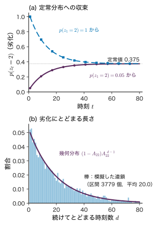
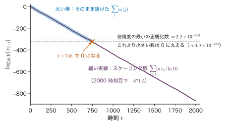
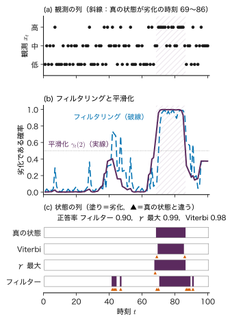
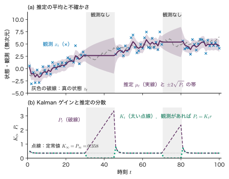
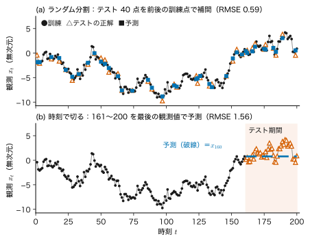

第22章系列データと隠れ Markov モデル — 順序のあるデータ
- 熱処理炉の温度センサーの記録が 1 時間ごとに残っている．炉の状態（正常か，ヒーターの劣化などの異常か）は直接見えない．記録だけから「いつ異常な状態に入ったか」をどう推定するか．その場で判断するのと，後から記録全体を見直すのとでは，答えはどう変わるか．
- 文章の確率 $p(x_1,x_2,\dots,x_T)$ はどう書けるか．直前の数語だけを見るモデルで足りるのはどこまでか．
- 時間とともに変わるデータで，訓練データと検証データをランダムに分けてはいけないのはなぜか．
これまでの章では，データ $\data=\{(\bm{x}_n,y_n)\}$ の各点を互いに独立に引かれたもの（独立同分布，i.i.d.）として扱ってきた．焼成した試料を 1 個ずつ測る実験なら，この仮定はおおむね自然である．ところが，炉の温度の記録，電池の充放電を繰り返したときの容量，文章の単語の並びは，順序に意味がある．1 時間前に温度が高ければ，今も高い見込みが大きい．この依存を捨てると，持っている情報の大半を捨てることになる．
本章では，順序のあるデータ（系列データ）の確率を書く方法を，最も素直な自己回帰分解から始めて組み立てる．条件を「直前だけ」に縮めた Markov（マルコフ）モデルと n-gram，直接見えない状態の列を背後に置く隠れ Markov モデル（HMM）を導入し，その計算の柱である forward 算法・backward 算法と Viterbi（ビタビ）法を導く．状態 2 個・時刻 3 個の例をすべて手で計算し，$2^{3}=8$ 通りの全列挙と一致することを確かめる．隠れ状態が連続のときの Kalman（カルマン）フィルターの入口，時系列で起こりやすい未来の情報の漏洩，炉の監視と電池の劣化への応用も扱う．
- 乗法定理から自己回帰分解を導き，条件が長くなると表が指数関数的に大きくなることを数で示せる．
- 遷移行列から 2 状態の Markov 連鎖の定常分布と，そこへ近づく速さを手で計算できる．n-gram の確率を数え上げで推定し，その限界を説明できる．
- 隠れ Markov モデルの同時分布を $\pi$，$\bm{A}$，$\bm{B}$ で書き，第19章のグラフと対応づけられる．
- forward 算法・backward 算法・平滑化の式を 1 行ずつ導き，状態 2 個・時刻 3 個で手計算して全列挙と照合できる．スケーリングで桁落ちを避けられる．
- フィルタリング・平滑化・Viterbi 法が答える問いの違いを説明し，両者が一致しない例を作れる．
- 1 次元の Kalman フィルターの予測と更新の式を，Gauss 分布の積から導ける．
- 時系列で「時刻で切る」検証を設計し，未来を見る特徴量に気づける．
入門ルートで読む節：22.1，22.2，22.13．入門ルートでは，系列の確率を自己回帰分解で書くことと，直前だけを見るモデルの限界をつかめば，次の第23章（RNN）へ進んでよい．「詳しいルート」の印が付いた節は，初めて読むときは飛ばしてよい．
22.1 系列データ — 独立同分布ではないデータと自己回帰分解
22.1.1 順序に意味があるデータ
系列データとは，位置（時刻）$t=1,2,\dots,T$ の順に並んだ値 $x_1,x_2,\dots,x_T$ である．$T$ を系列長，$t$ を位置または時刻と呼ぶ．本書では，ひと続きの部分を $x_{s:t}\equiv(x_s,x_{s+1},\dots,x_t)$，位置 $t$ より前のすべてを $x_{\lt t}\equiv(x_1,\dots,x_{t-1})$ と書く（第2章と同じ記号）．$x_t$ は実数（温度，容量）でも，有限個の値のどれか（「低・中・高」の区分，単語）でもよい．後者の場合，とりうる値の数を語彙の大きさ $V_{\mathrm{voc}}$ と呼び，値を $v\in\{1,\dots,V_{\mathrm{voc}}\}$ の番号で表す．
系列データが i.i.d. のデータと違うのは，近くの値どうしが似ている（または規則的に続く）ことである．i.i.d. なら同時分布は周辺分布の積 $p(x_{1:T})=\prod_t p(x_t)$ に分かれ，並べ替えても確率は変わらない．系列データでは並べ替えると確率が変わる．「温度が上がった後に下がった」と「下がった後に上がった」は別の出来事である．
22.1.2 自己回帰分解
どんな同時分布でも，第2章の乗法定理 $p(a,b)=p(b\mid a)\,p(a)$ を繰り返し使えば，前から順に条件付き確率の積へ分解できる．$T=3$ で書くと
$$ \begin{aligned} p(x_1,x_2,x_3)&=p(x_3\mid x_1,x_2)\,p(x_1,x_2)\\ &=p(x_3\mid x_1,x_2)\,p(x_2\mid x_1)\,p(x_1) \end{aligned} $$である．1 行目は $a=(x_1,x_2)$，$b=x_3$ とおいた乗法定理，2 行目は $p(x_1,x_2)$ にもう一度乗法定理を使った．同じことを $T$ 個まで続けると次を得る．
定理22.1 自己回帰分解
任意の同時分布 $p(x_{1:T})$ について
\begin{equation} p(x_{1:T})=\prod_{t=1}^{T}p(x_t\mid x_{\lt t}) \label{eq:22-ar} \end{equation}が成り立つ．$t=1$ の因子は条件のない $p(x_1)$ と読む．
式 \eqref{eq:22-ar} は近似ではなく恒等式であり，何の仮定も置いていない（第2章 2.2）．読み方は「系列全体の確率は，1 個目の確率 × 1 個目を見た後の 2 個目の確率 × …」である．文章なら，単語を 1 個ずつ予測する確率の積が文章全体の確率になる．次の 1 個を予測するモデルを作れば，系列全体の確率モデルが手に入る．これが第26章の GPT の学習目標の出発点である（自己回帰分解の名は，各因子が「自分自身の過去」を条件にすることから来ている）．
22.1.3 条件が長くなりすぎる問題
式 \eqref{eq:22-ar} は正しいが，そのままでは学習できない．$x_t$ が $V_{\mathrm{voc}}$ 通りの値をとるとき，$p(x_t\mid x_{\lt t})$ を表で持つには，条件 $x_{\lt t}$ の値の組 $V_{\mathrm{voc}}^{\,t-1}$ 通りのそれぞれについて，$V_{\mathrm{voc}}-1$ 個の確率（和が 1 なので 1 個は残りから決まる）が要る．$t=1$ から $T$ まで足すと
$$ \sum_{t=1}^{T}V_{\mathrm{voc}}^{\,t-1}(V_{\mathrm{voc}}-1)=V_{\mathrm{voc}}^{\,T}-1 $$個になり（等比数列の和．左辺は $V_{\mathrm{voc}}-1$ に $1+V_{\mathrm{voc}}+\dots+V_{\mathrm{voc}}^{\,T-1}=(V_{\mathrm{voc}}^{\,T}-1)/(V_{\mathrm{voc}}-1)$ を掛けたもの），これは同時分布の表をそのまま持つのと同じ数である．分解しただけでは何も節約していない．節約するには，条件を縮める仮定（22.2 節の Markov 性，22.3 節の隠れ状態）か，条件を固定長のベクトルに要約する関数（第23章の RNN，第24〜26章の Transformer）が要る．本章は前者，次章以降は後者の道である．
例題22.1 自己回帰分解で系列の確率を計算する
炉の温度の偏差を 1 時間ごとに「低・中・高」の 3 区分で記録する（$V_{\mathrm{voc}}=3$）．ある期間の記録から，$p(x_1=\text{低})=0.5$，$p(x_2=\text{中}\mid x_1=\text{低})=0.4$，$p(x_3=\text{高}\mid x_1=\text{低},x_2=\text{中})=0.2$ と見積もられたとする（教育用の数値）．(1) 系列「低・中・高」の確率を求めよ．(2) 長さ $T=4$ の系列の同時分布を表で持つときの自由なパラメーターの数を，式 \eqref{eq:22-ar} の因子ごとに数えて合計せよ．(3) 語彙が $V_{\mathrm{voc}}=3\times10^{4}$ 語，長さ $T=20$ の文章ではいくつになるか（常用対数で答えよ）．
解答 (1) 式 \eqref{eq:22-ar} に代入して
$$ \begin{aligned} &p(\text{低},\text{中},\text{高})\\ &=p(\text{低})\,p(\text{中}\mid\text{低})\,p(\text{高}\mid\text{低},\text{中})\\ &=0.5\times0.4\times0.2=0.04 . \end{aligned} $$(2) $t=1$：条件なしで $3-1=2$ 個．$t=2$：条件 $x_1$ が 3 通りで $3\times2=6$ 個．$t=3$：条件 $(x_1,x_2)$ が $3^{2}=9$ 通りで $9\times2=18$ 個．$t=4$：$3^{3}=27$ 通りで $54$ 個．合計 $2+6+18+54=80=3^{4}-1$ で，同時分布の表 $3^{4}=81$ 個のますから正規化の 1 個を引いた数と一致する．
(3) $V_{\mathrm{voc}}^{\,T}-1\approx(3\times10^{4})^{20}$．常用対数は $20\log_{10}(3\times10^{4})=20\times4.4771=89.54$ なので，約 $3.5\times10^{89}$ 個である．表を作ることは原理的にできない．
22.2 Markov モデルと n-gram — 直前だけを見る
22.2.1 1 次の Markov 性と遷移行列
最も強い縮め方は「次の値は直前の値だけで決まる（それ以前は直前を通してしか効かない）」とすることである．
定義22.1 1 次の Markov 連鎖と遷移行列
値 $z_t\in\{1,\dots,K\}$ の列が，すべての $t\ge2$ について
\begin{equation} p(z_t\mid z_{1:t-1})=p(z_t\mid z_{t-1}) \label{eq:22-markov} \end{equation}を満たすとき，1 次の Markov 連鎖（Markov chain）という．$K$ を状態の数という．右辺が $t$ によらないとき（時間的に一様なとき），
$$ A_{ij}\equiv p(z_t=j\mid z_{t-1}=i)\qquad(i,j=1,\dots,K) $$を並べた $\bm{A}\in\R^{K\times K}$ を遷移行列という．行 $i$ が「今の状態」，列 $j$ が「次の状態」であり，各行の和は 1 である（$\sum_jA_{ij}=1$．状態 $i$ からはどこかへ必ず移る）．初期分布を $\pi_i\equiv p(z_1=i)$ とする．
ここで状態の記号に $z$ を使ったのは，22.3 節でこの鎖を「見えない状態」として使うためである（観測そのものに Markov 性を仮定するときは $x_t$ と書いてもよい）．記号の断り：$\pi_i$ は円周率ではなく初期分布である（第17章では混合係数に同じ文字を使う）．
式 \eqref{eq:22-markov} を自己回帰分解 \eqref{eq:22-ar} に入れると，同時分布は
\begin{equation} p(z_{1:T})=\pi_{z_1}\prod_{t=2}^{T}A_{z_{t-1}z_t} \label{eq:22-markov-joint} \end{equation}となる．パラメーターは $\pi$ の $K-1$ 個と $\bm{A}$ の $K(K-1)$ 個だけで，$T$ によらない．
22.2.2 状態の分布の時間変化と定常分布
時刻 $t$ の状態の分布を列ベクトル $\bm{p}_t\in\R^{K}$（成分 $p_t(j)=p(z_t=j)$）で表す．加法定理と乗法定理から
$$ \begin{aligned} p_t(j)&=\sum_{i=1}^{K}p(z_{t-1}=i)\,p(z_t=j\mid z_{t-1}=i)\\ &=\sum_{i=1}^{K}p_{t-1}(i)\,A_{ij} \end{aligned} $$であり，行列で書けば
\begin{equation} \bm{p}_t^{\tp}=\bm{p}_{t-1}^{\tp}\bm{A},\qquad \bm{p}_t^{\tp}=\bm{\pi}^{\tp}\bm{A}^{t-1} \label{eq:22-chapman} \end{equation}である（$\bm{\pi}=(\pi_1,\dots,\pi_K)^{\tp}$）．行ベクトルに右から $\bm{A}$ を掛ける形になるのは，$\bm{A}$ の行が「今」を表すからである．$\bm{p}^{\tp}\bm{A}=\bm{p}^{\tp}$ を満たす分布 $\bm{p}^{*}$ を定常分布という．一度その分布になれば，以後の時刻でも同じ分布のままである．
2 状態（$K=2$）なら手で解ける．$A_{12}=1-A_{11}$（1 から 2 へ移る確率），$A_{21}=1-A_{22}$ とおく．状態 2 にいる確率 $p_t(2)$ の時間変化は
$$ \begin{aligned} p_t(2)&=p_{t-1}(1)A_{12}+p_{t-1}(2)A_{22}\\ &=\bigl(1-p_{t-1}(2)\bigr)A_{12}+p_{t-1}(2)\,(1-A_{21})\\ &=A_{12}+(1-A_{12}-A_{21})\,p_{t-1}(2) \end{aligned} $$である．定常分布は $p_t(2)=p_{t-1}(2)=p^{*}(2)$ とおいて $p^{*}(2)=A_{12}+(1-A_{12}-A_{21})p^{*}(2)$，すなわち $p^{*}(2)(A_{12}+A_{21})=A_{12}$ から求まる．上の式からこの式を引くと，ずれ $p_t(2)-p^{*}(2)$ は毎時刻 $\lambda\equiv1-A_{12}-A_{21}$ 倍になる．まとめると次の公式になる．
公式22.2 2 状態の Markov 連鎖の定常分布と収束
$A_{12}+A_{21}\gt0$ のとき，
\begin{equation} \begin{gathered} p^{*}(1)=\frac{A_{21}}{A_{12}+A_{21}},\\ p^{*}(2)=\frac{A_{12}}{A_{12}+A_{21}},\\ p_t(2)-p^{*}(2)\\ =\lambda^{t-1}\bigl(\pi_2-p^{*}(2)\bigr),\\ \lambda=1-A_{12}-A_{21} \end{gathered} \label{eq:22-stationary} \end{equation}$\abs{\lambda}\lt1$ なら，どの初期分布から出発しても定常分布に近づく．$\lambda$ は $\bm{A}$ のもう一つの固有値である（1 つ目は 1．各行の和が 1 なので $\bm{A}\bm{1}=\bm{1}$）．
定常分布の式は「1 から 2 へ流れ出る量 $p^{*}(1)A_{12}$」と「2 から 1 へ流れ込む量 $p^{*}(2)A_{21}$」が釣り合う条件 $p^{*}(1)A_{12}=p^{*}(2)A_{21}$ と同じである（第21章 21.5 節の詳細釣り合いの最も簡単な例）．もう一つ大事な量が，一つの状態に続けてとどまる時刻数（滞在時間）$d$ である．状態 $i$ に入った後，毎時刻確率 $A_{ii}$ でとどまり $1-A_{ii}$ で出るので，$p(d)=(1-A_{ii})A_{ii}^{\,d-1}$（幾何分布）であり，平均は
$$ \begin{aligned} \Ex[d]&=\sum_{d=1}^{\infty}d\,(1-A_{ii})A_{ii}^{\,d-1}\\ &=\frac{1-A_{ii}}{(1-A_{ii})^{2}}=\frac{1}{1-A_{ii}} \end{aligned} $$である（$\sum_{d\ge1}d\,a^{d-1}=1/(1-a)^{2}$ は等比級数 $\sum_d a^{d}=a/(1-a)$ を $a$ で微分した式）．
例題22.2 炉の状態の定常分布と，そこへ近づく速さ
炉の状態を 1 = 正常，2 = 劣化（ヒーターの劣化などで温度が上振れしやすい状態）とし，1 時間ごとの遷移行列を $A_{11}=0.97$，$A_{22}=0.95$ とする（教育用の数値．22.6 節のシミュレーターの既定と同じ）．(1) 定常分布を求めよ．(2) 正常と劣化の平均滞在時間を求め，(1) と比べよ．(3) $\pi_2=0.05$ から出発するとき，$p_t(2)$ と定常値の差が 0.01 未満になる最初の $t$ を求めよ．
解答 (1) $A_{12}=0.03$，$A_{21}=0.05$．式 \eqref{eq:22-stationary} より $p^{*}(1)=0.05/0.08=0.625$，$p^{*}(2)=0.03/0.08=0.375$．確かめ：$0.625\times0.97+0.375\times0.05$ $=0.60625+0.01875=0.625$．
(2) 正常 $1/(1-0.97)\approx33.3$ 時間，劣化 $1/(1-0.95)=20$ 時間．長い目で見た劣化の割合は $20/(33.3+20)=0.375$ で，(1) の $p^{*}(2)$ と一致する（定常分布は「滞在時間の比」でもある）．
(3) $\lambda=1-0.03-0.05=0.92$．差は $\abs{0.05-0.375}\times0.92^{t-1}=0.325\times0.92^{t-1}$ である．$0.325\times0.92^{t-1}\lt0.01$ を解くと $t-1\gt\ln(0.01/0.325)/\ln0.92$ $=(-3.481)/(-0.0834)=41.75$ なので，$t=43$（そのとき $p_{43}(2)=0.3652$）．

numpy.random.default_rng(20261113)，状態 1 から出発），実線は幾何分布 $(1-A_{22})A_{22}^{\,d-1}$．平均は $1/(1-A_{22})=20$ である．22.2.3 n-gram — 直前の n−1 個を見る
文章や記号列そのものに Markov 性を仮定するのが n-gram モデルである．式 \eqref{eq:22-ar} の条件を直前の $n-1$ 個に縮め，
\begin{equation} p(x_t\mid x_{\lt t})\approx p(x_t\mid x_{t-n+1:t-1}) \label{eq:22-ngram} \end{equation}とする（$n=2$ が bigram，$n=3$ が trigram．$n=2$ は 1 次の Markov 連鎖そのもの）．各条件付き確率は，訓練用の系列で数えた回数の比で推定する．bigram なら，$\mathrm{cnt}(u,v)$ を「$u$ の直後に $v$ が来た回数」として
$$ \hat{p}(x_t=v\mid x_{t-1}=u)=\frac{\mathrm{cnt}(u,v)}{\sum_{v'}\mathrm{cnt}(u,v')} $$である．これは第4章と同じく，カテゴリカル分布の最尤推定である（各行ごとに独立なカテゴリカル分布を当てはめている）．Shannon（シャノン）は 1948 年の論文で，英語の文字や単語を n-gram で近似して文を生成し，$n$ を上げるほど英語らしくなることを示した．
例題22.3 記録から bigram を推定する
炉のセンサーの偏差を 3 区分で記録した最初の 20 時間分が
低 中 低 中 低 中 高 低 低 低 低 中 低 低 中 低 中 低 中 中
だった（22.6 節のシミュレーターの既定の系列の先頭 20 個．教育用の合成データ）．(1) 19 個の隣り合う組を数えて bigram の回数の表を作り，遷移確率の最尤推定値を求めよ．(2) この推定で $p(\text{高}\mid\text{高})$ はいくつか．何が問題か．(3) 各行の回数に 1 を足す推定（加算平滑化）では $p(\text{高}\mid\text{低})$ はいくつになるか．
解答 (1) 直前の値（行）と次の値（列）で数えると
| $u\backslash v$ | 低 | 中 | 高 | 行の和 |
|---|---|---|---|---|
| 低 | 4 | 7 | 0 | 11 |
| 中 | 5 | 1 | 1 | 7 |
| 高 | 1 | 0 | 0 | 1 |
（行の和の合計は 19．最後の「中」は直後がないので行の和に入らない．）最尤推定値は行ごとに割って，$\hat p(\cdot\mid\text{低})=(4/11,\,7/11,\,0)=(0.364,\,0.636,\,0)$，$\hat p(\cdot\mid\text{中})=(5/7,\,1/7,\,1/7)$ $=(0.714,\,0.143,\,0.143)$，$\hat p(\cdot\mid\text{高})=(1,\,0,\,0)$．
(2) 「高」は 1 回しか現れず，その直後は「低」だったので $\hat p(\text{高}\mid\text{高})=0$ である．しかし「高が続く」ことは起こりうる（この系列の後半では実際に高が続く）．回数 0 の組に確率 0 を与えると，その組を含む系列全体の確率が 0 になり，対数尤度は $-\infty$ になる．データが少ないと，n-gram は見たことのない組を「起こりえない」と言い切ってしまう．
(3) 加算平滑化では $(\mathrm{cnt}+1)/(\text{行の和}+3)$ なので $p(\text{高}\mid\text{低})=(0+1)/(11+3)=1/14\approx0.071$．これは各行に一様な Dirichlet 分布 $\mathrm{Dir}(1,1,1)$ の事前分布を置いたときの事後平均であり，第4章の Beta 分布の場合（$a=b=1$）を 3 値に広げたものである．
22.2.4 n-gram の限界
n-gram の弱点は二つある．第一に，パラメーターの数が $V_{\mathrm{voc}}^{\,n-1}(V_{\mathrm{voc}}-1)$ で $n$ について指数関数的に増える．$V_{\mathrm{voc}}=3\times10^{4}$ なら bigram で約 $9.0\times10^{8}$，trigram で約 $2.7\times10^{13}$ 個であり，ほとんどの組は訓練データに一度も現れない（例題22.3 (2) の問題が大規模に起こる）．第二に，$n-1$ 個より前の情報はまったく使えない．「その試料を 1300 °C で焼いた．……（数文）……それの密度は」の「それ」が何を指すかは，数十語前を見ないと分からない．$n$ を上げれば第一の問題が悪化し，下げれば第二の問題が残る．この板挟みを，過去を連続のベクトルに要約して解こうとするのが第23章の RNN であり，必要な位置を直接見に行くのが第24章の Attention である．
1 次の Markov 連鎖でも $z_1$ と $z_{10}$ は無関係ではないが，$z_1$ の情報は毎時刻 $\lambda$ 倍ずつ薄まる（式 \eqref{eq:22-stationary}）．「間に何が挟まっても特定の語を指す」ような依存は，この指数関数的な減衰の型に合わない．
22.3 隠れ Markov モデル — 見えない状態の列詳しいルート
22.3.1 状態は見えず，観測だけが得られる
炉の例に戻る．知りたいのは炉の状態（正常か劣化か）だが，記録されるのはセンサーの値だけである．正常でもたまたま「高」が出るし，劣化していても「低」が出ることがある．このとき，状態の列に Markov 連鎖を仮定し，観測は各時刻の状態だけから確率的に生まれる，と考えるのが隠れ Markov モデル（hidden Markov model，HMM）である（図22.1(c)）．観測どうしには直接の矢印がないが，状態の鎖を通じて，遠い時刻の観測も依存しあう．n-gram と違い，状態が少なければパラメーターは少ないまま，長い時間にわたる依存（劣化の期間がしばらく続くこと）を表せる．
定義22.2 隠れ Markov モデル
隠れ状態 $z_t\in\{1,\dots,K\}$ と観測 $x_t\in\{1,\dots,V_{\mathrm{voc}}\}$（$t=1,\dots,T$）について，次の 3 つを与える．
- 初期分布 $\bm{\pi}\in\R^{K}$：$\pi_i=p(z_1=i)$．
- 遷移行列 $\bm{A}\in\R^{K\times K}$：$A_{ij}=p(z_t=j\mid z_{t-1}=i)$（各行の和が 1）．
- 出力確率（emission probability）の行列 $\bm{B}\in\R^{K\times V_{\mathrm{voc}}}$：$B_{jv}=p(x_t=v\mid z_t=j)$（各行の和が 1）．
同時分布を
\begin{equation} \begin{aligned} &p(x_{1:T},z_{1:T})\\ &\quad=\pi_{z_1}\prod_{t=2}^{T}A_{z_{t-1}z_t}\prod_{t=1}^{T}B_{z_tx_t} \end{aligned} \label{eq:22-hmm-joint} \end{equation}と定めたモデルを隠れ Markov モデルという．$\bm{A}$，$\bm{B}$ は時刻によらないとする．
式 \eqref{eq:22-hmm-joint} の添字 $B_{z_tx_t}$ は「行 $z_t$，列 $x_t$ の成分」である．たとえば $z_t=2$，$x_t=\text{高}$ なら $B_{2,\text{高}}$ を掛ける．第19章 19.4 節では同じモデルを $p(z_1)\prod_{t\ge2}p(z_t\mid z_{t-1})\prod_{t}p(x_t\mid z_t)$ の形に書いた．対応は
$$ \begin{gathered} p(z_1)=\pi_{z_1},\quad p(z_t\mid z_{t-1})=A_{z_{t-1}z_t},\\ p(x_t\mid z_t)=B_{z_tx_t} \end{gathered} $$であり，式 \eqref{eq:22-hmm-joint} は有向グラフの分解（各変数に「親を条件とした分布」を 1 つずつ掛ける）をそのまま表に書き直したものである．パラメーターの数は $(K-1)+K(K-1)+K(V_{\mathrm{voc}}-1)$ で，系列長 $T$ によらない．観測が連続値なら，$B_{jx_t}$ を密度 $p(x_t\mid z_t=j)$（たとえば $\Normal(x_t\mid\mu_j,\sigma^{2})$）に替えるだけで，以下の算法はすべてそのまま使える．
22.3.2 グラフから読める条件付き独立
以下の導出では，次の 3 つの条件付き独立を使う．どれも式 \eqref{eq:22-hmm-joint} の形（または第19章 19.3 節の d 分離）から確かめられる．$z_t$ を知れば，鎖はそこで「切れる」というのが共通の意味である．
- $p(x_t\mid z_t,\ x_{1:t-1},\ z_{1:t-1})=p(x_t\mid z_t)=B_{z_tx_t}$（観測は今の状態だけで決まる）．
- $p(z_t\mid z_{t-1},\ x_{1:t-1},\ z_{1:t-2})$ $=p(z_t\mid z_{t-1})=A_{z_{t-1}z_t}$（状態の Markov 性．過去の観測は $z_{t-1}$ を通してしか効かない）．
- $p(x_{t+1:T}\mid z_t,\ x_{1:t},\ z_{1:t-1})=p(x_{t+1:T}\mid z_t)$（今の状態を知れば，未来の観測は過去と無関係）．
例題22.4 状態の列と観測の列の同時確率
状態 2 個（1 = 正常，2 = 劣化），観測 3 値（低・中・高）の HMM で，$\bm{\pi}=(0.6,\,0.4)^{\tp}$，
$$ \bm{A}=\begin{pmatrix}0.7&0.3\\0.4&0.6\end{pmatrix},\qquad \bm{B}=\begin{pmatrix}0.5&0.4&0.1\\0.1&0.3&0.6\end{pmatrix} $$とする（$\bm{B}$ の列は低・中・高の順．教育用の数値．22.7 節の手計算でも使う）．(1) パラメーターの数を数えよ．(2) 状態の列 $z_{1:3}=(1,1,2)$ と観測の列 $x_{1:3}=(\text{低},\text{中},\text{高})$ の同時確率を求めよ．(3) 観測だけの確率 $p(x_{1:3})$ を，式 \eqref{eq:22-hmm-joint} から求めるには何通りの和が要るか．
解答 (1) $(2-1)+2\times(2-1)+2\times(3-1)$ $=1+2+4=7$ 個．
(2) 式 \eqref{eq:22-hmm-joint} の因子を時刻の順に並べる．
(3) 加法定理で隠れ状態を消す：$p(x_{1:3})=\sum_{z_{1:3}}p(x_{1:3},z_{1:3})$．状態の列は $K^{T}=2^{3}=8$ 通りある．$T=100$ なら $2^{100}\approx1.3\times10^{30}$ 通りで，そのまま足すことはできない．22.5 節の forward 算法がこれを解決する．
22.4 三つの問題 — 尤度・状態の推定・学習詳しいルート
22.4.1 何を計算したいか
HMM を使う場面で計算したい量は，次の三つにまとめられる（Rabiner (1989) の整理）．
| 問題 | 求める量 | 使い道 | 算法と計算量 |
|---|---|---|---|
| 1. 尤度 | $p(x_{1:T})$ | モデルの比較，異常な系列の検出 | forward（22.5 節）$O(TK^{2})$ |
| 2a. フィルタリング | $p(z_t\mid x_{1:t})$ | その時刻での判断（実時間の監視） | forward（22.5 節） |
| 2b. 平滑化 | $\gamma_t(j)=p(z_t=j\mid x_{1:T})$ | 記録を後から解析する | forward–backward（22.6 節） |
| 2c. 復号 | $\argmax_{z_{1:T}}p(z_{1:T}\mid x_{1:T})$ | 一貫した状態の列が欲しいとき | Viterbi（22.8 節）$O(TK^{2})$ |
| 3. 学習 | $\bm{\pi},\bm{A},\bm{B}$ | パラメーターをデータから決める | Baum–Welch 法（EM 法） |
2a〜2c はどれも「状態の推定」だが，使える観測と答えの形が違う．2a はその時刻までの観測しか使わない．2b は後の観測も使う．2c は時刻ごとの確率ではなく，列全体として最も確からしい 1 本を返す．この違いは 22.6 節と 22.8 節で数値で確かめる．
22.4.2 Baum–Welch 法（紹介）
パラメーター $\bm{\theta}=(\bm{\pi},\bm{A},\bm{B})$ を観測だけから最尤推定するには，隠れ状態を潜在変数とする EM 法（第17章 17.5 節）を使う．HMM の EM 法を Baum–Welch（バウム–ウェルチ）法という（Baum et al. 1970）．E ステップでは，今のパラメーターで次の 2 つの事後確率を計算する（22.6 節で導く）．
\begin{equation} \begin{aligned} \gamma_t(j)&=p(z_t=j\mid x_{1:T}),\\ \xi_t(i,j)&=p(z_t=i,\,z_{t+1}=j\mid x_{1:T}) \end{aligned} \label{eq:22-estep} \end{equation}M ステップでは，これらを「何回その状態にいたか」「何回 $i$ から $j$ へ移ったか」の期待回数として，回数の比でパラメーターを更新する．
\begin{equation} \begin{aligned} \pi_i^{\mathrm{new}}&=\gamma_1(i),\\ A_{ij}^{\mathrm{new}}&=\frac{\sum_{t=1}^{T-1}\xi_t(i,j)}{\sum_{t=1}^{T-1}\gamma_t(i)},\\ B_{jv}^{\mathrm{new}}&=\frac{\sum_{t:\,x_t=v}\gamma_t(j)}{\sum_{t=1}^{T}\gamma_t(j)} \end{aligned} \label{eq:22-bw} \end{equation}状態が見えていれば例題22.3 と同じく回数を数えて割るだけだが，見えないので回数をその期待値に置き換えた，と読める（第17章の負担率 $\gamma_{nk}$ と同じ考え）．対数尤度は単調に増えるが局所的な最大に止まりうるし，状態の番号の意味（どれが「正常」か）は学習後に人が $\bm{B}$ を見て決める．本章ではパラメーターを既知とする．
例題22.5 E ステップの量を 1 つ計算する
例題22.4 のパラメーターと観測 $x_{1:3}=(\text{低},\text{中},\text{高})$ について，22.7 節の表22.3 の値 $\alpha_1(1)=0.30$，$\beta_2(1)=0.25$，$p(x_{1:3})=0.036280$ を使う（定義は 22.5・22.6 節）．$\xi_1(1,1)=\alpha_1(1)A_{11}B_{1,\text{中}}\beta_2(1)/p(x_{1:3})$ を計算せよ（この式は 22.6 節の式 \eqref{eq:22-xi}）．また，$\xi_1(1,\cdot)$ の和 $\xi_1(1,1)+\xi_1(1,2)$ が $\gamma_1(1)=0.87652$ になることを，$\xi_1(1,2)=\alpha_1(1)A_{12}B_{2,\text{中}}\beta_2(2)/p(x_{1:3})$（$\beta_2(2)=0.40$）を計算して確かめよ．
解答 $\xi_1(1,1)$ $=0.30\times0.7\times0.4\times0.25/0.036280$ $=0.021/0.036280=0.57883$．$\xi_1(1,2)$ $=0.30\times0.3\times0.3\times0.40/0.036280$ $=0.0108/0.036280=0.29768$．和は $0.57883+0.29768=0.87651$ で，丸めの範囲で $\gamma_1(1)=0.87652$ に一致する（$\sum_j\xi_t(i,j)=\gamma_t(i)$ は，$z_{t+1}$ について周辺化した加法定理である）．
22.5 forward 算法 — 尤度を O(TK²) で計算する詳しいルート
22.5.1 forward 変数と漸化式
$K^{T}$ 通りの和を避ける鍵は，和をとる順番を入れ替え，途中の結果を時刻ごとにまとめておくことである（第19章 19.7 節の鎖の上のメッセージ伝播）．まとめておく量を次のように定義する．
定義22.3 forward 変数
\begin{equation} \alpha_t(j)\equiv p(x_{1:t},\,z_t=j) \label{eq:22-alpha-def} \end{equation}（$t=1,\dots,T$，$j=1,\dots,K$）．「時刻 $t$ までの観測がこの値になり，かつ時刻 $t$ の状態が $j$ である」同時確率である．条件付き確率ではないので，$\sum_j\alpha_t(j)=p(x_{1:t})$ は 1 ではない．
記号の断り：$\alpha$ は第7章・第11章では Lagrange 乗数（双対変数）に使ったが，本章では forward 変数である．$\beta$ も統計力学の $1/(k_{\mathrm B}T)$ ではなく，22.6 節の backward 変数である．
導出：forward 算法の漸化式
初期値（$t=1$）：乗法定理で $\alpha_1(j)=p(x_1,z_1=j)$ $=p(z_1=j)\,p(x_1\mid z_1=j)=\pi_jB_{jx_1}$．
漸化式（$t\ge2$）：まず加法定理で $z_{t-1}$ を加えてから消す形にする．
$$ \alpha_t(j)=\sum_{i=1}^{K}p(x_{1:t},\,z_{t-1}=i,\,z_t=j) $$和の中を，$x_t$，$z_t$，残り $(x_{1:t-1},z_{t-1})$ の順に乗法定理で分ける．
$$ \begin{aligned} &p(x_{1:t},\,z_{t-1}=i,\,z_t=j)\\ &=p(x_t\mid x_{1:t-1},z_{t-1}=i,z_t=j)\\ &\quad\times p(z_t=j\mid x_{1:t-1},z_{t-1}=i)\\ &\quad\times p(x_{1:t-1},z_{t-1}=i) \end{aligned} $$22.3.2 項の性質 1 で第 1 因子は $B_{jx_t}$，性質 2 で第 2 因子は $A_{ij}$，第 3 因子は定義から $\alpha_{t-1}(i)$ である．$B_{jx_t}$ は $i$ によらないので和の外に出せて，
$$ \alpha_t(j)=B_{jx_t}\sum_{i=1}^{K}\alpha_{t-1}(i)\,A_{ij}. $$尤度：最後の時刻で状態を加法定理で消すと $p(x_{1:T})=\sum_j p(x_{1:T},z_T=j)=\sum_j\alpha_T(j)$．
（導出終わり）
2 行目は $t\ge2$ で使う．漸化式の読み方は「前の時刻の各状態の重み $\alpha_{t-1}(i)$ を遷移確率 $A_{ij}$ で $j$ へ流し込み（予測），その時刻の観測の出やすさ $B_{jx_t}$ を掛ける（観測による重みづけ）」である（図22.3）．各時刻・各状態について $K$ 項の和をとるので，計算量は $O(TK^{2})$ である．$K=2$，$T=100$ なら全列挙の約 $10^{30}$ 通りに対して $100\times4=400$ 回程度の掛け算で済む．
22.5.2 桁落ち — 確率の積は 0 に丸まる
$\alpha_t(j)$ は確率の積なので，$t$ とともに指数関数的に小さくなる．1 時刻ごとにおよそ $p(x_t\mid x_{1:t-1})$ 倍（1 より小さい）になるからである．倍精度の浮動小数点数で表せる最小の正の数は約 $4.9\times10^{-324}$ なので，ある長さを超えると $\alpha_t(j)$ は 0 に丸まり，尤度も事後確率も計算できなくなる（図22.4）．

対処は 2 通りある．一つは対数で計算する方法で，$\ln\alpha_t(j)=\ln B_{jx_t}+\ln\sum_i\exp\bigl(\ln\alpha_{t-1}(i)+\ln A_{ij}\bigr)$ を log-sum-exp（最大の項をくくり出してから指数をとる．第9章 9.5 節）で計算する．もう一つは，毎時刻で正規化するスケーリングである．
導出：スケーリング版の forward 算法
規格化した forward 変数と正規化の係数を
$$ \begin{aligned} \hat\alpha_t(j)&\equiv\frac{\alpha_t(j)}{p(x_{1:t})}=p(z_t=j\mid x_{1:t}),\\ c_t&\equiv p(x_t\mid x_{1:t-1}) \end{aligned} $$と定める（$c_1=p(x_1)$）．$\hat\alpha_t(j)$ はフィルタリングの確率そのもの（その時刻までの観測から見た今の状態の確率）である．乗法定理より $p(x_{1:t})=c_t\,p(x_{1:t-1})$ なので，式 \eqref{eq:22-forward} の両辺を $p(x_{1:t})$ で割ると
$$ \begin{aligned} \hat\alpha_t(j)&=\frac{B_{jx_t}\sum_i\alpha_{t-1}(i)A_{ij}}{c_t\,p(x_{1:t-1})}\\ &=\frac{1}{c_t}\,B_{jx_t}\sum_i\hat\alpha_{t-1}(i)A_{ij}. \end{aligned} $$$\sum_j\hat\alpha_t(j)=1$ なので，$c_t$ は右辺の分子を $j$ について足したものである．最後に $p(x_{1:T})=c_1c_2\cdots c_T$ の対数をとる．
（導出終わり）
1 行目が予測，3 行目が更新である．$t=1$ では予測を $\pi_j$ とする．この形は「予測してから観測で更新する」という Bayes の定理の繰り返しになっている．予測が事前分布，$B_{jx_t}$ が尤度，$c_t$ が正規化定数（その時刻の観測の周辺尤度）である．22.9 節の Kalman フィルターは，同じ「予測と更新」を連続の状態で行うものである．
例題22.6 スケーリング版で尤度とフィルタリングを計算する
例題22.4 のパラメーターと観測 $x_{1:3}=(\text{低},\text{中},\text{高})$ について，式 \eqref{eq:22-scaled} で $c_1,c_2,c_3$ とフィルタリングの確率 $\hat\alpha_t(2)$ を求め，$c_1c_2c_3=p(x_{1:3})$ を確かめよ．
解答 $t=1$：予測は $\bm{\pi}=(0.6,0.4)$．分子 $(0.5\times0.6,\ 0.1\times0.4)=(0.30,\ 0.04)$，$c_1=0.34$，$\hat\alpha_1=(0.88235,\ 0.11765)$．
$t=2$（中）：予測 $p(z_2=1\mid x_1)$ $=0.88235\times0.7+0.11765\times0.4$ $=0.66471$，$p(z_2=2\mid x_1)=0.33529$．分子 $(0.4\times0.66471,\ 0.3\times0.33529)$ $=(0.26588,\ 0.10059)$，$c_2=0.36647$，$\hat\alpha_2=(0.72552,\ 0.27448)$．
$t=3$（高）：予測 $0.72552\times0.7+0.27448\times0.4=0.61766$ と $0.38234$．分子 $(0.1\times0.61766,\ 0.6\times0.38234)$ $=(0.061766,\ 0.22941)$，$c_3=0.29117$，$\hat\alpha_3=(0.21213,\ 0.78787)$．
積は $0.34\times0.36647\times0.29117=0.036280$ で，22.7 節の $\alpha_3(1)+\alpha_3(2)$ と一致する．$\ln p(x_{1:3})$ $=\ln0.34+\ln0.36647+\ln0.29117$ $=-3.3165$．どの時刻でも数は 0.06 より大きく，桁落ちの心配はない．
22.6 backward 算法と平滑化 — 後の観測も使う詳しいルート
22.6.1 backward 変数
記録を後から解析するなら，時刻 $t$ の状態の推定に $t$ より後の観測も使える．後の観測の情報を時刻 $T$ から逆向きにまとめるのが backward 変数である．
定義22.4 backward 変数と平滑化の確率
\begin{equation} \begin{aligned} &\beta_t(i)\equiv p(x_{t+1:T}\mid z_t=i),\\ &\gamma_t(j)\equiv p(z_t=j\mid x_{1:T}) \end{aligned} \label{eq:22-beta-def} \end{equation}$\beta_t(i)$ は「今の状態が $i$ なら，この先の観測がこの値になる確率」で，状態を条件にした条件付き確率である（$\sum_i\beta_t(i)$ は 1 とは限らない）．$t=T$ では先の観測がないので $\beta_T(i)=1$ とおく．$\gamma_t(j)$ を平滑化（smoothing）の確率という．
導出：backward 算法と平滑化
漸化式（$t\le T-1$）：$z_{t+1}$ を加えて消す．
$$ \beta_t(i)=\sum_{j=1}^{K}p(x_{t+1:T},\,z_{t+1}=j\mid z_t=i) $$和の中を乗法定理で 3 つに分ける．
$$ \begin{aligned} &p(x_{t+1:T},z_{t+1}=j\mid z_t=i)\\ &=p(x_{t+2:T}\mid x_{t+1},z_{t+1}=j,z_t=i)\\ &\quad\times p(x_{t+1}\mid z_{t+1}=j,z_t=i)\\ &\quad\times p(z_{t+1}=j\mid z_t=i) \end{aligned} $$22.3.2 項の性質 3 で第 1 因子は $\beta_{t+1}(j)$，性質 1 で第 2 因子は $B_{jx_{t+1}}$，第 3 因子は $A_{ij}$ である．
平滑化：時刻 $t$ で観測を「$t$ まで」と「$t$ より後」に分け，乗法定理と性質 3 を使う．
$$ \begin{aligned} &p(x_{1:T},z_t=j)\\ &=p(x_{1:t},z_t=j)\,p(x_{t+1:T}\mid x_{1:t},z_t=j)\\ &=\alpha_t(j)\,\beta_t(j). \end{aligned} $$これを $p(x_{1:T})$ で割れば $\gamma_t(j)$ である．$j$ について足すと，どの時刻 $t$ でも $\sum_j\alpha_t(j)\beta_t(j)=p(x_{1:T})$ が成り立つ（計算の確かめに使える）．隣り合う 2 時刻の状態についても同じ分け方で $p(x_{1:T},z_t=i,z_{t+1}=j)$ $=\alpha_t(i)A_{ij}B_{jx_{t+1}}\beta_{t+1}(j)$ が得られ，これが Baum–Welch 法の $\xi_t(i,j)$（式 \eqref{eq:22-estep}）の分子になる．
（導出終わり）
forward 算法と backward 算法を合わせて forward–backward 算法という．これは第19章 19.8 節の sum-product 算法を鎖に当てはめたものであり，$\alpha$ が左から，$\beta$ が右から届くメッセージに当たる．スケーリングするときは，$\hat\beta_t(i)\equiv\beta_t(i)/\prod_{s=t+1}^{T}c_s$ とおくと，同じ $c_t$ を使って $\hat\beta_t(i)=\frac{1}{c_{t+1}}\sum_jA_{ij}B_{jx_{t+1}}\hat\beta_{t+1}(j)$ と計算でき，$\gamma_t(j)=\hat\alpha_t(j)\hat\beta_t(j)$ となる（$\alpha_t\beta_t=p(x_{1:t})\hat\alpha_t\cdot\hat\beta_t\prod_{s\gt t}c_s=p(x_{1:T})\hat\alpha_t\hat\beta_t$ だから）．
22.6.2 フィルタリングと平滑化の違い
フィルタリング $\hat\alpha_t(j)=p(z_t=j\mid x_{1:t})$ と平滑化 $\gamma_t(j)=p(z_t=j\mid x_{1:T})$ の違いは，条件に入っている観測だけである．フィルタリングはその時刻に計算できる（実時間の監視・制御に使える）が，状態が切り替わった直後は「たまたま高い値が出ただけか，本当に劣化したか」を区別できず，判断が遅れたり誤報を出したりする．平滑化は後の観測を見てから判断を修正できるが，記録がそろうまで計算できない．図22.5 は，22.6 節のシミュレーターの既定の系列で両者を比べたものである．

数で確かめておく．劣化は時刻 69 に始まるが，69 の観測「中」はどちらの状態でも出やすさ $1/3$ なので，フィルタリングは 0.116 のままで，「高」が続いた 70・71 で 0.473，0.831 と上がる（0.5 を超えるのは 2 時刻遅れの 71）．平滑化は後の「高」を知っているので，69 で 0.773，68 ですでに 0.593 になる．正常の区間の時刻 42〜44・47 では，フィルタリングは偶然の「高」で誤報を出すが，平滑化は後に「低」が続くのを見て 0.5 未満にとどまる．
例題22.7 backward 変数と平滑化の確率を手で計算する
例題22.4 のパラメーターと観測 $x_{1:3}=(\text{低},\text{中},\text{高})$ について，(1) $\beta_2(1)$，$\beta_2(2)$，$\beta_1(1)$，$\beta_1(2)$ を式 \eqref{eq:22-backward} で求めよ．(2) 22.7 節の $\alpha_1=(0.30,\,0.040)$ を使って $\sum_j\alpha_1(j)\beta_1(j)$ を計算し，$\gamma_1(2)$ を求めよ．(3) フィルタリング $\hat\alpha_1(2)=0.11765$（例題22.6）と比べ，違いを説明せよ．
解答 (1) $\beta_3(1)=\beta_3(2)=1$．$x_3=\text{高}$ なので
$$ \begin{aligned} \beta_2(1)&=A_{11}B_{1,\text{高}}+A_{12}B_{2,\text{高}}\\ &=0.7\times0.1+0.3\times0.6=0.25,\\ \beta_2(2)&=A_{21}B_{1,\text{高}}+A_{22}B_{2,\text{高}}\\ &=0.4\times0.1+0.6\times0.6=0.40. \end{aligned} $$$x_2=\text{中}$ なので
$$ \begin{aligned} \beta_1(1)&=0.7\times0.4\times0.25+0.3\times0.3\times0.40\\ &=0.070+0.036=0.106,\\ \beta_1(2)&=0.4\times0.4\times0.25+0.6\times0.3\times0.40\\ &=0.040+0.072=0.112. \end{aligned} $$(2) $0.30\times0.106+0.040\times0.112$ $=0.0318+0.00448=0.03628$ で，$p(x_{1:3})$ に一致する．$\gamma_1(2)=0.00448/0.03628=0.12348$．
(3) 時刻 1 の観測「低」だけを見たフィルタリングは 0.11765 である．平滑化はこれに後の観測「中・高」の情報 $\beta_1(2)/\beta_1(1)=0.112/0.106\gt1$ を掛けて少し劣化の側へ動かし，0.12348 になる．後で「高」が出たことは「劣化に移りかけていた」可能性をわずかに高める．
シミュレーター22.1 生成した系列でフィルタリング・平滑化・Viterbi を比べる
2 状態（1 = 正常，2 = 劣化）の HMM から観測の列を作り，forward–backward 算法と Viterbi 法で隠れ状態を推定して，真の状態と比べる装置である．状態は 2 個，$\bm{A}$ と $\bm{B}$ は時刻によらず，推定にはデータを作ったのと同じパラメーターを使う（学習はしない）．出力確率は離れ具合 $s$ で $B_{1\cdot}=((1+s)/3,\,1/3,\,(1-s)/3)$，$B_{2\cdot}$ はその逆順と決めている．
操作と観察
- 開いた直後の既定（表示「生成した系列」，観測の型「離散 3 値（低・中・高）」，$\pi_1=0.95$，$A_{11}=0.97$，$A_{22}=0.95$，$s=0.70$，$T=100$，seed 20261112）のまま読み出しを見る → 対数尤度 $\ln p(x_{1:T})=-102.6791$，正答率はフィルタリング 0.90，$\gamma$ 最大（平滑化）0.99，Viterbi 0.98．図が図22.5 と同じであることを確かめる．
- 「調べる時刻 $t$」を 70 にする（既定のまま）→「いまの数値を式に入れると」に，予測 $p(z_{70}=2\mid x_{1:69})$ $=0.8840\times0.03000+0.1160\times0.9500$ $=0.1367$，$c_{70}$ $=0.1000\times0.8633+0.5667\times0.1367$ $=0.1638$，$\hat\alpha_{70}(2)=0.5667\times0.1367/0.1638=0.4730$，$\gamma_{70}(2)=0.4730\times2.027=0.9588$ が出る．式 \eqref{eq:22-scaled} の 3 行と，$\gamma_t=\hat\alpha_t\hat\beta_t$ に数値を入れたものである．
- 「1 時刻進める」を 2 回押す → フィルタリングが $t=71$ で 0.8313，$t=72$ で 0.9564 と遅れて上がるのに対し，平滑化はすでに 0.99 を超えていることを見る．
- 出力分布の離れ具合 $s$ を 0 にする（同じ seed で系列が作り直される）→ 正答率が 3 つとも 0.82 になり，$\ln p(x_{1:T})=-109.8612=100\ln(1/3)$ になる．続けて $s$ を 0.30 にする → フィルタリング 0.70，$\gamma$ 最大 0.62，Viterbi 0.85．
操作後の問い
- 手順 4 で $s=0$ にすると，正答率がちょうど 0.82 になり，対数尤度が $100\ln(1/3)$ になるのはなぜか．
答えの例
$s=0$ では $B_{1\cdot}=B_{2\cdot}=(1/3,1/3,1/3)$ で，観測は状態について何も語らない．各時刻の $c_t=\sum_jB_{jx_t}p(z_t=j\mid x_{1:t-1})=1/3$ なので $\ln p=100\ln(1/3)=-109.86$．推定は遷移だけで決まり，$\pi_1=0.95$ から出発した $p(z_t=2)$ は定常値 0.375 より小さい範囲にとどまるので，どの時刻も「正常」と答える．真の状態が正常の時刻は $100-18=82$ 個なので正答率は 0.82 である．
- 手順 2〜3 で，劣化の始まりの判断がフィルタリングでは遅れ，平滑化では遅れないのはなぜか．監視の現場ではどちらを使うべきか．
答えの例
フィルタリングは時刻 $t$ までの観測しか使わず，事前の遷移確率 $A_{12}=0.03$ が小さいので，「高」が 1 回出ただけでは劣化と判断しない．平滑化は後に「高」が続くことを $\hat\beta_t$ として取り込むので，遡って劣化の始まりを推定できる．実時間の警報にはフィルタリングしか使えない（後の観測はまだ無い）．平滑化は，停止後に記録を見直して原因を調べるときに使う．
- 手順 4 の $s=0.30$ では，平滑化（$\gamma$ 最大）の正答率がフィルタリングより低い．平滑化は損をしているのか．
答えの例
各時刻で $\gamma_t$ が最大の状態を選ぶ規則は，モデルが正しいときの正答数の期待値を最大にする．ある 1 本の系列での正答率は運でばらつき，観測の情報が弱い（$s$ が小さい）と，期待値で優れた規則が個別の系列で負けることがある．seed を変えて何度か比べると，平均では平滑化のほうが高くなることが多い．「平滑化は常に正答率が高い」とは言えない．
22.7 手計算 — 状態 2 個・時刻 3 個を全列挙と照合する詳しいルート
例題22.4 のパラメーター（$\bm{\pi}=(0.6,0.4)^{\tp}$，$A_{11}=0.7$，$A_{22}=0.6$，$B_{1\cdot}=(0.5,0.4,0.1)$，$B_{2\cdot}=(0.1,0.3,0.6)$）と観測 $x_{1:3}=(\text{低},\text{中},\text{高})$ で，forward・backward・平滑化をすべて計算し，8 通りの全列挙と照らし合わせる．数値は有効数字 5 桁で示す．
22.7.1 forward
$t=1$：$\alpha_1(1)=\pi_1B_{1,\text{低}}=0.6\times0.5=0.30000$，$\alpha_1(2)=0.4\times0.1=0.040000$．
$t=2$（中）：
$$ \begin{aligned} \alpha_2(1)&=B_{1,\text{中}}\bigl(\alpha_1(1)A_{11}+\alpha_1(2)A_{21}\bigr)\\ &=0.4\times(0.30\times0.7+0.04\times0.4)\\ &=0.4\times0.226=0.090400,\\ \alpha_2(2)&=B_{2,\text{中}}\bigl(\alpha_1(1)A_{12}+\alpha_1(2)A_{22}\bigr)\\ &=0.3\times(0.30\times0.3+0.04\times0.6)\\ &=0.3\times0.114=0.034200. \end{aligned} $$$t=3$（高）：
$$ \begin{aligned} \alpha_3(1)&=0.1\times(0.0904\times0.7+0.0342\times0.4)\\ &=0.1\times0.07696=0.0076960,\\ \alpha_3(2)&=0.6\times(0.0904\times0.3+0.0342\times0.6)\\ &=0.6\times0.04764=0.028584. \end{aligned} $$尤度は $p(x_{1:3})=0.0076960+0.028584=0.036280$ である．
22.7.2 backward と平滑化
backward は例題22.7 で求めた：$\beta_3=(1,1)$，$\beta_2=(0.25,\,0.40)$，$\beta_1=(0.106,\,0.112)$．平滑化は $\gamma_t(j)=\alpha_t(j)\beta_t(j)/0.036280$ である．たとえば $\gamma_2(1)=0.0904\times0.25/0.03628$ $=0.022600/0.03628=0.62293$．表にまとめる．
| $t$ | $x_t$ | $\alpha_t(1)$ | $\alpha_t(2)$ | $\beta_t(1)$ | $\beta_t(2)$ | $\gamma_t(1)$ | $\gamma_t(2)$ | $\hat\alpha_t(2)$ |
|---|---|---|---|---|---|---|---|---|
| 1 | 低 | 0.30000 | 0.040000 | 0.10600 | 0.11200 | 0.87652 | 0.12348 | 0.11765 |
| 2 | 中 | 0.090400 | 0.034200 | 0.25000 | 0.40000 | 0.62293 | 0.37707 | 0.27448 |
| 3 | 高 | 0.0076960 | 0.028584 | 1.0000 | 1.0000 | 0.21213 | 0.78787 | 0.78787 |
確かめ：どの $t$ でも $\sum_j\alpha_t(j)\beta_t(j)=0.036280$ になる（$t=2$：$0.0904\times0.25+0.0342\times0.40$ $=0.0226+0.01368=0.03628$）．最後の時刻では $\beta_3=1$ なので，平滑化とフィルタリングが一致する（$\gamma_3(2)=\hat\alpha_3(2)=0.78787$）．
22.7.3 8 通りの全列挙
状態の列 $z_1z_2z_3$ のそれぞれについて式 \eqref{eq:22-hmm-joint} で同時確率を計算する（$z_1z_2z_3=112$ は例題22.4 (2) で計算済み）．
| $z_1z_2z_3$ | $p(x_{1:3},z_{1:3})$ | $p(z_{1:3}\mid x_{1:3})$ |
|---|---|---|
| 111 | 0.0058800 | 0.16207 |
| 112 | 0.015120 | 0.41676 |
| 121 | 0.0010800 | 0.029768 |
| 122 | 0.0097200 | 0.26792 |
| 211 | 0.00044800 | 0.012348 |
| 212 | 0.0011520 | 0.031753 |
| 221 | 0.00028800 | 0.0079383 |
| 222 | 0.0025920 | 0.071444 |
| 和 | 0.036280 | 1 |
たとえば 121 は $\pi_1B_{1,\text{低}}\cdot A_{12}B_{2,\text{中}}\cdot A_{21}B_{1,\text{高}}$ $=0.30\times0.09\times0.04=0.00108$ である．
例題22.8 全列挙から平滑化の確率を作る
表22.4 から (1) $p(x_{1:3})$，(2) $\gamma_2(1)=p(z_2=1\mid x_{1:3})$，(3) $\alpha_2(1)$ に当たる量をそれぞれ取り出し，表22.3 と一致することを確かめよ．
解答 (1) 同時確率の 8 個の和は $0.036280$ で，forward の $\sum_j\alpha_3(j)$ と一致する．
(2) $z_2=1$ の列（111，112，211，212）の事後確率を足す：$0.16207+0.41676+0.012348+0.031753$ $=0.62293$．表22.3 の $\gamma_2(1)$ と一致する．
(3) $\alpha_2(1)=p(x_{1:2},z_2=1)$ は，$z_1$ を消し，時刻 3 の観測を含めない量である．$z_1z_2=11$ と $21$ の経路の時刻 2 までの因子の積を足して $0.30\times0.28+0.04\times0.16$ $=0.084+0.0064=0.0904$．forward の値 0.090400 と一致する．forward 算法は，この「途中までの経路の和」を時刻ごとに再利用しているのである．
22.8 Viterbi 法 — 最も確からしい状態の列詳しいルート
22.8.1 和を最大に替える
表22.4 で最大の行（112）を探すのが復号である．$T$ が大きいと全列挙はできないが，forward 算法の「和」を「最大」に替えれば同じ格子の上で求まる．これが Viterbi 法である（Viterbi 1967．もとは畳み込み符号の復号法．第19章 19.8 節の max-sum 算法を鎖に当てはめたもの）．
定義22.5 Viterbi 変数とバックポインター
\begin{equation} \begin{aligned} &\omega_t(j)\equiv\max_{z_{1:t-1}}\\ &\quad p(x_{1:t},\,z_{1:t-1},\,z_t=j) \end{aligned} \label{eq:22-omega-def} \end{equation}「時刻 $t$ に状態 $j$ で終わる状態の列のうち，最も確からしいものの同時確率」である．その最も確からしい列の，時刻 $t-1$ の状態をバックポインター $\psi_t(j)$ と書く．
導出：Viterbi 法の漸化式
式 \eqref{eq:22-hmm-joint} より，時刻 $t$ までの同時確率は「時刻 $t-1$ までの同時確率 × $A_{z_{t-1}j}B_{jx_t}$」と書ける．
$$ \begin{aligned} &p(x_{1:t},z_{1:t-1},z_t=j)\\ &=p(x_{1:t-1},z_{1:t-1})\,A_{z_{t-1}j}\,B_{jx_t}. \end{aligned} $$最大化を「$z_{t-1}=i$ を決めてから，残りの $z_{1:t-2}$ について」の 2 段に分ける．後ろの 2 因子は $z_{1:t-2}$ によらず 0 以上なので，内側の最大の外に出せる（$c\ge0$ なら $\max_a cf(a)=c\max_af(a)$）．
$$ \begin{aligned} \omega_t(j)&=\max_{i}\Bigl[A_{ij}B_{jx_t}\\ &\qquad\times\max_{z_{1:t-2}}p(x_{1:t-1},z_{1:t-2},z_{t-1}=i)\Bigr]\\ &=B_{jx_t}\max_{i}\bigl[\omega_{t-1}(i)\,A_{ij}\bigr]. \end{aligned} $$初期値は $\omega_1(j)=\pi_jB_{jx_1}$．最後に $z_T^{*}=\argmax_j\omega_T(j)$ を選び，$z_{t-1}^{*}=\psi_t(z_t^{*})$ と後ろから順にたどる．
（導出終わり）
実際の計算では桁落ちを避けるため対数をとり，$\ln\omega_t(j)=\ln B_{jx_t}+\max_i[\ln\omega_{t-1}(i)+\ln A_{ij}]$ とする（積が和になり，最大値の位置は対数をとっても変わらない）．Viterbi 法は max を使うので log-sum-exp も要らない．計算量は forward と同じ $O(TK^{2})$ である．
既定の観測（低・中・高）で計算すると，$\omega_1=(0.30,\,0.040)$，$\omega_2(1)$ $=0.4\times\max(0.30\times0.7,\ 0.04\times0.4)$ $=0.4\times0.21=0.084$（$\psi_2(1)=1$），$\omega_2(2)$ $=0.3\times\max(0.30\times0.3,\ 0.04\times0.6)$ $=0.027$（$\psi_2(2)=1$），$\omega_3=(0.0058800,\,0.015120)$（$\psi_3=(1,1)$）である．$\omega_3(2)$ が大きいので $z_3^{*}=2$，$z_2^{*}=\psi_3(2)=1$，$z_1^{*}=\psi_2(1)=1$ となり，Viterbi の経路は 正常・正常・劣化（112）である．その同時確率 0.015120 は表22.4 の最大の行と一致する．この例では，各時刻で $\gamma_t$ が最大の状態を並べた列（表22.3：1，1，2）とも一致している．
22.8.2 時刻ごとの最善と列全体の最善は違う
一致は偶然である．観測を 低・高・中 に変えると食い違う．
例題22.9 Viterbi の経路と γ 最大の列が食い違う例
例題22.4 のパラメーターで，観測を $x_{1:3}=(\text{低},\text{高},\text{中})$ とする．(1) Viterbi 法で $\omega_t$，$\psi_t$ と最も確からしい列を求めよ．(2) 平滑化は $\gamma_1=(0.82643,\,0.17357)$，$\gamma_2=(0.26447,\,0.73553)$，$\gamma_3=(0.54627,\,0.45373)$ である（式 \eqref{eq:22-backward} で計算できる．演習22.2 と同じ手順）．各時刻で $\gamma_t$ が最大の状態を並べた列を作り，その列の同時確率を Viterbi の経路と比べよ．(3) 食い違う理由を説明せよ．
解答 (1) $\omega_1=(0.6\times0.5,\ 0.4\times0.1)=(0.30,\ 0.040)$．時刻 2（高）：
$$ \begin{aligned} \omega_2(1)&=0.1\times\max(0.30\times0.7,\ 0.04\times0.4)\\ &=0.1\times0.21=0.021,\\ \omega_2(2)&=0.6\times\max(0.30\times0.3,\ 0.04\times0.6)\\ &=0.6\times0.09=0.054, \end{aligned} $$で $\psi_2=(1,1)$．時刻 3（中）では，$\omega_2(i)A_{i1}$ が $0.021\times0.7=0.0147$ と $0.054\times0.4=0.0216$，$\omega_2(i)A_{i2}$ が $0.021\times0.3=0.0063$ と $0.054\times0.6=0.0324$ なので
$$ \begin{aligned} \omega_3(1)&=0.4\times\max(0.0147,\ 0.0216)\\&=0.00864,\\ \omega_3(2)&=0.3\times\max(0.0063,\ 0.0324)\\&=0.00972, \end{aligned} $$で $\psi_3=(2,2)$．$\omega_3(2)\gt\omega_3(1)$ なので $z_3^{*}=2$，$z_2^{*}=\psi_3(2)=2$，$z_1^{*}=\psi_2(2)=1$．Viterbi の経路は 正常・劣化・劣化（122）で，同時確率は 0.00972．
(2) $\gamma_1$，$\gamma_2$，$\gamma_3$ の大きい方は 正常，劣化，正常 なので列は 121．同時確率は $\pi_1B_{1,\text{低}}\cdot A_{12}B_{2,\text{高}}\cdot A_{21}B_{1,\text{中}}$ $=0.30\times0.18\times0.16$ $=0.00864$ で，Viterbi の 0.00972 より小さい．
(3) $\gamma_3(1)=0.546$ は，$z_3=1$ で終わるすべての列（111，121，211，221）の事後確率の和である．$z_2=1$ を通る列（111：同時確率 0.00588）も足すので $z_3=1$ がわずかに優勢になる．一方，$z_2=2$ と決めた 1 本の列の中で比べると，劣化にとどまる $A_{22}=0.6$ が戻る $A_{21}=0.4$ より大きいので，122 が 121 に勝つ．「各時刻で最も確からしい状態」と「最も確からしい状態の列」は別の問いであり，答えが違ってよい．
どちらを使うかは目的で決める．時刻ごとに正しく当てた数を最大にしたいなら $\gamma_t$ の最大を，列として筋の通った 1 本（劣化の区間がいつ始まりいつ終わったか）が欲しいなら Viterbi を使う．$\gamma_t$ の最大を並べた列は，遷移確率 0 の組を含んで「起こりえない列」になることさえある（演習22.4）．
シミュレーター22.2 手計算（状態 2 個・時刻 3 個）を格子図と全列挙で確かめる
22.7 節と 22.8 節の手計算を，格子図・表・全列挙で確かめる装置である．$\pi_1$，$A_{11}$，$A_{22}$，出力確率（0.1 刻み），3 個の観測を自由に変えられる．
操作と観察
- 開いた直後の表示は「手計算（T = 3）」，プリセットは「既定（低・中・高）」である → forward・backward・平滑化の表が表22.3 と，8 通りの全列挙の表が表22.4 と一致し，$\alpha_3(1)+\alpha_3(2)$ と全列挙の和がどちらも 0.036280 になることを確かめる．式 \eqref{eq:22-forward} と \eqref{eq:22-backward}．
- 「式を表示する量」で ω を選び，Viterbi 法の表を見る → 表に $\omega_2=(0.084000,\,0.027000)$，$\omega_3=(0.0058800,\,0.015120)$ が出て，格子図の緑の矢印（Viterbi の経路）が 正常 → 正常 → 劣化 をたどることを見る．式 \eqref{eq:22-viterbi}．
- プリセット「食い違う例（低・高・中）」を押す → Viterbi の経路は 正常 → 劣化 → 劣化 だが，二重の枠（$\gamma$ 最大）は 正常 → 劣化 → 正常 になる．全列挙の表で 122 の 0.0097200 と 121 の 0.0086400 を比べる（例題22.9，図22.6）．
- $\pi_1$ を 0，$A_{22}$ を 1，$B_{2,\text{低}}$ を 0 にし，$x_1$ を「低」にする → 最初は必ず劣化で，劣化は「低」を出さないので，観測列の確率が 0 になり，装置は理由を表示して計算を止める．
操作後の問い
- 既定のプリセットで，$\alpha_2(2)$ と $\beta_1(1)$ を手で計算せよ．
答えの例
$\alpha_2(2)$ $=B_{2,\text{中}}(\alpha_1(1)A_{12}+\alpha_1(2)A_{22})$ $=0.3\times(0.30\times0.3+0.04\times0.6)$ $=0.3\times0.114=0.034200$．$\beta_1(1)$ $=A_{11}B_{1,\text{中}}\beta_2(1)+A_{12}B_{2,\text{中}}\beta_2(2)$ $=0.7\times0.4\times0.25+0.3\times0.3\times0.40$ $=0.106$．
- 「食い違う例」で $A_{22}$ を 0.6 から下げていくと，ある所で Viterbi の経路が $\gamma$ 最大の列と一致する．なぜか．
答えの例
122 と 121 の同時確率の比は，最後の遷移と出力 $A_{22}B_{2,\text{中}}$ と $A_{21}B_{1,\text{中}}=(1-A_{22})\times0.4$ の比である．$0.3A_{22}\lt0.4(1-A_{22})$，すなわち $A_{22}\lt4/7\approx0.571$ になると 121 の方が大きくなる．装置の刻み（0.1）では $A_{22}=0.5$ で Viterbi の経路が 121（同時確率 0.0108）に変わり，$\gamma$ 最大の列（$\gamma_3=(0.6213,\,0.3787)$ で 121 のまま）と一致する．
22.9 状態空間モデルと Kalman フィルターの入口詳しいルート
22.9.1 隠れ状態が連続のとき
HMM の隠れ状態は「正常・劣化」のような有限個の値だった．炉の温度のずれの大きさや，電池の残りの容量のように，隠れた量が連続に変わることも多い．グラフは図22.1(c) と同じで，$z_t$ が実数になったものを状態空間モデル（state space model）という．forward 算法の和は積分に替わる．
$$ p(z_t\mid x_{1:t-1})=\int p(z_t\mid z_{t-1})\,p(z_{t-1}\mid x_{1:t-1})\,\dd z_{t-1} $$一般にはこの積分は解けないが，遷移も観測も線形で Gauss 分布の雑音なら，分布はずっと Gauss 分布のままで，平均と分散だけを更新すれば済む．これが Kalman フィルター（Kalman 1960）である．ここでは最も簡単な 1 次元の場合を導く．
定義22.6 1 次元のランダムウォークと観測ノイズ
隠れ状態 $z_t\in\R$ と観測 $x_t\in\R$（同じ単位．本節の例は無次元）について
\begin{equation} \begin{aligned} z_t&=z_{t-1}+w_t,\\ x_t&=z_t+v_t,\\ z_1&\sim\Normal(\mu_0,\,P_0) \end{aligned} \label{eq:22-ssm} \end{equation}とする．ここで $w_t\sim\Normal(0,q)$，$v_t\sim\Normal(0,r)$ であり，$q$ は過程ノイズの分散（状態が 1 時刻にどれだけ動くか），$r$ は観測ノイズの分散（センサーのばらつき）で，$w_t$，$v_t$ は互いに独立で過去とも独立である．$z_1$ の分布 $\Normal(\mu_0,P_0)$ は HMM の初期分布 $\pi$ に当たる．
フィルタリングの分布を $p(z_t\mid x_{1:t})=\Normal(z_t\mid\mu_t,\,P_t)$（$\mu_t$：推定の平均，$P_t$：推定の分散），1 つ前までの観測から見た予測を $p(z_t\mid x_{1:t-1})=\Normal(z_t\mid\mu_{t\mid t-1},\,P_{t\mid t-1})$ と書く．$t=1$ の予測は初期分布そのもので，$\mu_{1\mid0}=\mu_0$，$P_{1\mid0}=P_0$ とする（$q$ は足さない）．記号の断り：本節の $K_t$ は Kalman ゲインで，状態の数 $K$ や第10章の Gram 行列 $\bm{K}$ とは別の量である．
22.9.2 予測と更新の導出
導出：1 次元の Kalman フィルター
予測（$t\ge2$）：$x_{1:t-1}$ のもとで $z_{t-1}\sim\Normal(\mu_{t-1},P_{t-1})$，$w_t\sim\Normal(0,q)$ は $z_{t-1}$ と独立である．独立な Gauss 分布の確率変数の和は Gauss 分布で，平均も分散も足し算になる（第2章 2.5 節の $\Var[a+b]=\Var[a]+\Var[b]$）．したがって
$$ \mu_{t\mid t-1}=\mu_{t-1},\qquad P_{t\mid t-1}=P_{t-1}+q. $$更新：Bayes の定理で，予測（事前分布）に観測 $x_t$ の尤度を掛ける．
$$ \begin{aligned} &p(z_t\mid x_{1:t})\\ &\propto\Normal(z_t\mid\mu_{t\mid t-1},P_{t\mid t-1})\,\Normal(x_t\mid z_t,\,r). \end{aligned} $$これは第4章 4.6 節の「Gauss 分布の平均のベイズ推定」で，事前分布の平均 $\mu_0\to\mu_{t\mid t-1}$，事前分布の分散 $\sigma_0^{2}\to P_{t\mid t-1}$，観測ノイズの分散 $\sigma^{2}\to r$，観測の個数 $N=1$ と読み替えたものである．第4章の定理4.5 から
$$ \begin{gathered} \frac{1}{P_t}=\frac{1}{P_{t\mid t-1}}+\frac{1}{r},\\ \mu_t=P_t\left(\frac{\mu_{t\mid t-1}}{P_{t\mid t-1}}+\frac{x_t}{r}\right). \end{gathered} $$1 つ目を通分すると $P_t=\dfrac{P_{t\mid t-1}\,r}{P_{t\mid t-1}+r}$．これを 2 つ目に入れると
$$ \begin{aligned} \mu_t&=\frac{r}{P_{t\mid t-1}+r}\,\mu_{t\mid t-1}+\frac{P_{t\mid t-1}}{P_{t\mid t-1}+r}\,x_t\\ &=\mu_{t\mid t-1}+\frac{P_{t\mid t-1}}{P_{t\mid t-1}+r}\bigl(x_t-\mu_{t\mid t-1}\bigr). \end{aligned} $$2 行目は 1 行目の $\mu_{t\mid t-1}$ の係数を $1-\frac{P_{t\mid t-1}}{P_{t\mid t-1}+r}$ と書き直したものである．$K_t\equiv P_{t\mid t-1}/(P_{t\mid t-1}+r)$ とおけば，$P_t=(1-K_t)P_{t\mid t-1}$ でもある．
（導出終わり）
上の 2 行が予測（$t\ge2$．$t=1$ では $\mu_{1\mid0}=\mu_0$，$P_{1\mid0}=P_0$），3 行目がゲイン，残りが更新である．$K_t$ を Kalman ゲインという．更新の式は「予測 $\mu_{t\mid t-1}$ を，観測との差（イノベーション）$x_t-\mu_{t\mid t-1}$ の $K_t$ 倍だけ動かす」と読める．$0\le K_t\le1$ で，予測が不確か（$P_{t\mid t-1}\gg r$）なら $K_t\to1$（観測をほぼ信じる），観測が不確か（$r\gg P_{t\mid t-1}$）なら $K_t\to0$（予測を信じる）．観測の確率 $p(x_t\mid x_{1:t-1})=\Normal(x_t\mid\mu_{t\mid t-1},\,P_{t\mid t-1}+r)$ が HMM の $c_t$ に当たり，その対数の和が対数尤度になる．観測が欠けた時刻は更新をせず，$\mu_t=\mu_{t\mid t-1}$，$P_t=P_{t\mid t-1}$（$K_t=0$）とする．
22.9.3 定常値
$q$，$r$ が一定なら，$P_t$ は観測の値によらず一定の値に近づく．予測の分散 $P^{-}\equiv P_{t+1\mid t}$ が変わらなくなる条件は $P^{-}=\dfrac{P^{-}r}{P^{-}+r}+q$ である．両辺に $P^{-}+r$ を掛けて整理すると $(P^{-})^{2}-qP^{-}-qr=0$ なので，正の解をとって
\begin{equation} \begin{aligned} P^{-}_{\infty}&=\frac{q+\sqrt{q^{2}+4qr}}{2},\\ K_\infty&=\frac{P^{-}_{\infty}}{P^{-}_{\infty}+r},\quad P_\infty=K_\infty r \end{aligned} \label{eq:22-kalman-steady} \end{equation}である（最後の式は $P_t=P_{t\mid t-1}r/(P_{t\mid t-1}+r)=K_tr$ から）．
例題22.10 Kalman フィルターを 3 時刻だけ手で回す
$q=0.2$，$r=1$，$\mu_0=0$，$P_0=1$ とし，観測が $x_1=0.54563$，$x_2=-3.0871$，$x_3=-0.79155$ だった（22.9 節のシミュレーターの既定の系列の最初の 3 個．教育用の合成データ）．(1) $K_t$，$\mu_t$，$P_t$（$t=1,2,3$）を求めよ．(2) 定常値 $K_\infty$ を求めよ．
解答 (1) $t=1$：$\mu_{1\mid0}=0$，$P_{1\mid0}=1$．$K_1=1/(1+1)=0.5$，$\mu_1=0+0.5\times0.54563=0.27282$，$P_1=0.5\times1=0.5$．
$t=2$：$\mu_{2\mid1}=0.27282$，$P_{2\mid1}=0.5+0.2=0.7$．$K_2=0.7/1.7=0.41176$．イノベーションは $-3.0871-0.27282=-3.3599$ なので $\mu_2$ $=0.27282+0.41176\times(-3.3599)$ $=-1.1107$，$P_2=0.7\times1/1.7=0.41176$．
$t=3$：$P_{3\mid2}=0.41176+0.2=0.61176$，$K_3=0.61176/1.61176=0.37956$．$\mu_3$ $=-1.1107+0.37956\times(-0.79155+1.1107)$ $=-1.1107+0.37956\times0.31913$ $=-0.98955$，$P_3=0.37956$．
（$r=1$ なので $P_t=K_t$ である．）$x_2=-3.09$ という大きく外れた値に対しても，$\mu_2$ は $-1.11$ までしか動かない．観測のばらつき $r=1$ を考えれば，1 回の値を丸ごと信じないのが合理的だからである．
(2) 式 \eqref{eq:22-kalman-steady} で $P^{-}_\infty=(0.2+\sqrt{0.04+0.8})/2$ $=(0.2+0.91652)/2=0.55826$，$K_\infty=0.55826/1.55826=0.35826$．$K_t$ は $0.5\to0.412\to0.380\to\cdots$ と速やかにこの値に近づく．

シミュレーター22.3 Kalman フィルターの予測と更新
ランダムウォークする隠れ状態をノイズの乗った観測から追う 1 次元の Kalman フィルター \eqref{eq:22-kalman} の装置である．状態の遷移の係数は 1 に限り，後ろ向きの平滑化は扱わない．$\mu_0=0$，$P_0=1$ は固定である．データを作る $q,r$ と，フィルターが仮定する $q,r$ を別々に変えられる．
操作と観察
- 既定（過程ノイズの分散 $q=0.200$，観測ノイズの分散 $r=1.00$，$T=100$，seed 20261112）で「最初の 3 時刻（予測と更新）」の表を見る → $K_1=0.50000$，$K_2=0.41176$，$K_3=0.37956$，$\mu_3=-0.98954$ が例題22.10 と一致する（最後の桁の違いは丸め）．読み出しの定常値 $K_\infty=0.3583$，$P_\infty=0.3583$（「いまの数値を式に入れると」の欄では 0.35826）を式 \eqref{eq:22-kalman-steady} と比べる．推定の誤差 0.620 は観測そのものの誤差 1.028 より小さく，真値が帯に入る割合（被覆率）は 95.0 % である．
- 「観測の欠けを入れる」をオンにする → 観測のない $t=31$〜45 で $\mu_t$ が 2.6612 のまま止まり，$P_t$ が $t=30$ の 0.358 から 0.558，0.758，… と毎時刻 0.2 ずつ増えて $t=45$ で 3.3583 になる．観測が戻った $t=46$ のゲインは 0.7806 である（図22.7）．
- 「観測の欠けを入れる」をオフに戻し，「データと同じ q, r を使う」を外して「フィルターの $q$」を 0.010 にする → $K_\infty=0.0951$ と小さくなり，推定は動きが鈍く，推定の誤差が 0.915，被覆率が 43.0 % に落ちる．「フィルターの $q$」を 1.000 にする → $K_\infty=0.6180$，推定の誤差 0.721，被覆率 96.0 %．
操作後の問い
- 手順 3 で，フィルターの $q$ を小さく仮定すると被覆率が 43 % まで落ちるのはなぜか．
答えの例
$q$ を小さく仮定すると，フィルターは「状態はほとんど動かない」と信じ，$P_t$ を小さく（帯を狭く）見積もる．同時にゲインも小さくなり，実際には $q=0.2$ で動く状態に推定が追いつけない．遅れた推定の周りに狭すぎる帯を描くので，真値が帯の外に出続ける．不確かさの帯の正しさは，モデルの仮定（ここでは $q$）が正しいことに依存する．
- 手順 2 で，観測が戻った時刻のゲインが 0.78 と大きいのはなぜか．
答えの例
観測のない 15 時刻の間に予測の分散が $P_{46\mid45}=3.3583+0.2=3.5583$ まで増えたので，$K_{46}=3.5583/(3.5583+1)=0.7806$ となる．自分の予測がほとんど当てにならないので，新しい観測を大きく信じるのが合理的である．
多次元では $\mu_t$ がベクトル，$P_t$ が共分散行列になるが，「予測で分散が増え，更新で減る」形は同じである．非線形のモデルには拡張 Kalman フィルターや粒子フィルター（第21章 21.4 節の重点サンプリングを時刻ごとに行うもの）が使われる．
22.10 時系列の分割と未来の情報の漏洩詳しいルート
22.10.1 ランダムに分けると「内挿」を評価してしまう
第6章 6.7 節では，評価に使うデータの情報が学習に紛れ込むデータ漏洩を扱った．時系列では，漏洩が特に気づきにくい形で起こる．モデルを使う場面は「今までの記録からこの先を予測する」ことが多い．ところが，時刻をランダムに選んで検証データにすると，検証する時刻の前後の値が訓練データに入る．隣り合う値は似ているので，前後の値から間を埋める（内挿する）だけで小さな誤差が出る．これは未来の値を見て答えているのと同じであり，本当にやりたい「予測（外挿）」の難しさを測っていない．
例題22.11 ランダム分割と時刻で切る分割の誤差を比べる
式 \eqref{eq:22-ssm} の形で，$q=0.5$，$r=0.1$，$z_1\sim\Normal(0,1)$，$T=200$ の系列を作った（教育用の合成データ．無次元．numpy.random.default_rng(20261113) で正規乱数を 200 個引いてその 2〜200 個目を $w_2,\dots,w_{200}$ とし，次の 1 個から $z_1$，続く 200 個から $v_t$ を作った．図22.8）．(a) 時刻をランダムに 40 個選んで検証データとし，前後の訓練データの値を直線で結んで予測する．検証の時刻は別の乱数 numpy.random.default_rng(20261114) の choice(200, 40, replace=False) で選んだ（時刻 1 のように片側に訓練データが無い点は，近い側の訓練データの値をそのまま予測に使う）．(b) 時刻 1〜160 を訓練，161〜200 を検証とし，最後の観測値 $x_{160}$ をそのまま予測に使う．(1) 理論的な誤差の分散を見積もれ．(a) は前後の時刻がどちらも訓練データにある場合（間の 1 点を中点で予測），(b) は $h$ 時刻先の予測とする．(2) 実際の RMSE（二乗平均平方根誤差）は (a) 0.59，(b) 1.56 だった．どちらが「来週の値を予測する」性能の評価として適切か．
解答 (1) (a) $x_t-\tfrac12(x_{t-1}+x_{t+1})$ を $w$，$v$ で書くと $z_t-z_{t-1}=w_t$，$z_{t+1}-z_t=w_{t+1}$ より
$$ \begin{aligned} &x_t-\tfrac12(x_{t-1}+x_{t+1})\\ &=\tfrac12(w_t-w_{t+1})+v_t-\tfrac12(v_{t-1}+v_{t+1}). \end{aligned} $$各項は独立なので分散は $\tfrac14(q+q)+r+\tfrac14(r+r)$ $=\tfrac{q}{2}+\tfrac{3r}{2}=0.25+0.15=0.40$，標準偏差 0.63．(b) $x_{160+h}-x_{160}$ $=(w_{161}+\dots+w_{160+h})+v_{160+h}-v_{160}$ なので分散は $hq+2r$ で，$h$ とともに増える．$h=1$ で $0.7$（標準偏差 0.84），$h=40$ で $20.2$（4.5）．$h=1,\dots,40$ で平均すると $\sqrt{\frac{1}{40}\sum_h(0.5h+0.2)}=\sqrt{10.45}=3.2$ である．
(2) (a) の 0.59 は理論の 0.63 に近く，「前後が分かっているときの誤差」を正しく測っている．しかし将来を予測するときには後ろの値は存在しないので，(a) は性能を大きく過大評価する．適切なのは (b) である．この系列の (b) の 1.56 は理論の平均 3.2 よりたまたま小さい（テスト期間の値が $x_{160}$ の近くにとどまった）．seed を変えて 500 回繰り返すと，(a) の RMSE の平均は 0.66，(b) は 2.93 で，500 回すべてで (a) が (b) より小さかった．

22.10.2 時刻で切る検証
時系列の検証は，モデルを使う場面を再現するように設計する（第6章 6.8 節の「何が新しいか」で分ける考えの時間版）．
- 時刻で切る：ある時刻より前を訓練，後を検証（さらに後をテスト）にする．最も基本の形である．
- 前進する検証（rolling origin，expanding window）：訓練の終わりを $t_1\lt t_2\lt\cdots$ と少しずつ後ろへずらし，そのたびに直後の一定期間を検証にして，誤差を平均する．データが少ないときの交差検証の代わりになる．
- 隙間を空ける：特徴量に過去 $m$ 時刻の値を使うなら，訓練の最後と検証の最初の間に $m$ 時刻以上の隙間を置く．置かないと，訓練の最後の目標値が検証の最初の特徴量に入る．
系列が独立とみなせる区切り（別々のバッチ，別々の電池セル）を持つなら，区切りごとに分けるのが第一である（第6章 6.8 節）．Bergmeir & Benítez (2012) は，時系列の予測モデルの評価で交差検証の各種の変形を比べている．
22.10.3 特徴量が未来を見ていないか
分割を正しくしても，特徴量の作り方で未来が入り込む．
- 中心の移動平均：時刻 $t$ の特徴量に $x_{t-2},\dots,x_{t+2}$ の平均を使うと，$t+1$，$t+2$ の値が入る．使ってよいのは過去だけの移動平均 $\frac{1}{m}\sum_{s=t-m}^{t-1}x_s$ である．
- 系列全体での標準化：全期間の平均と標準偏差で標準化すると，検証期間の水準が訓練に入る．標準化の係数は訓練期間だけで決める（第6章 6.7 節の前処理の fit と同じ）．
- 平滑化した量を特徴量にする：HMM の $\gamma_t$ や後ろ向きの平滑化は，$t$ より後の観測を使う（22.6 節）．実時間で予測するモデルの特徴量には，フィルタリング $\hat\alpha_t$ だけが使える．
22.11 材料工学・物性物理学との接点 — 炉の監視，電池の劣化，転送行列詳しいルート
22.11.1 製造プロセスの監視
焼成炉や熱処理炉では，炉内の熱電対の値が制御の目標から外れる量（偏差）が連続して記録される．ヒーターの劣化，断熱材の損傷，熱電対自体のずれなどが起こると，偏差の出方が変わる．ただし偏差は試料の出し入れや外気温でも揺れるので，1 回の外れ値で異常とは言えない．これを HMM で書くと，対応は次のとおりである．
| モデルの要素 | 炉の監視での意味 | 本章の値 |
|---|---|---|
| 隠れ状態 $z_t$ | 炉の状態（1 = 正常，2 = 劣化） | $K=2$ |
| 観測 $x_t$ | 1 時間ごとの偏差の区分（低・中・高） | $V_{\mathrm{voc}}=3$ |
| $A_{11}$，$A_{22}$ | 状態の持続のしやすさ．平均滞在時間 $1/(1-A_{ii})$ | 0.97，0.95（33 時間，20 時間） |
| $\bm{B}$ | 状態ごとの偏差の出方 | $s=0.7$ で $B_{1,\text{高}}=0.100$，$B_{2,\text{高}}=0.567$ |
| フィルタリング $\hat\alpha_t(2)$ | 今この時刻に警報を出すかの判断材料 | 図22.5 の破線 |
| 平滑化 $\gamma_t(2)$ | 停止後に「いつ劣化が始まったか」を調べる | 図22.5 の実線 |
フィルタリングの更新は，2 状態ならオッズ（劣化の確率 ÷ 正常の確率）で書くと見通しがよい．式 \eqref{eq:22-scaled} の更新の式で状態 2 と状態 1 の比をとると $c_t$ が消えて
$$ \frac{\hat\alpha_t(2)}{\hat\alpha_t(1)}=\frac{p(z_t=2\mid x_{1:t-1})}{p(z_t=1\mid x_{1:t-1})}\times\frac{B_{2x_t}}{B_{1x_t}} $$となる．「予測のオッズ × 尤度比」である．本章の値では「高」の尤度比は $0.567/0.100=5.67$，「低」は $0.100/0.567=0.176$，「中」は 1 である．
例題22.12 「高」が何回続けば警報を出すか
表22.5 の値で，正常が続いてフィルタリングの確率が $\hat\alpha_{t-1}(2)=0.02$ になっている．ここから「高」が続けて観測されるとき，$\hat\alpha(2)$ が 0.5 を超えるのは何回目か．0.9 を超えるのは何回目か．
解答 1 回目：予測 $p(z_t=2\mid x_{1:t-1})$ $=A_{12}\times0.98+A_{22}\times0.02$ $=0.03\times0.98+0.95\times0.02$ $=0.0484$．予測のオッズ $0.0484/0.9516=0.0509$，更新後のオッズ $0.0509\times5.67=0.288$，確率 $0.288/1.288=0.224$．
2 回目：予測 $0.03\times0.776+0.95\times0.224=0.236$，オッズ $0.309$，更新後 $0.309\times5.67=1.75$，確率 $0.636$．
3 回目：予測 $0.03\times0.364+0.95\times0.636=0.615$，オッズ $1.60$，更新後 $9.06$，確率 $0.901$．
したがって 0.5 を超えるのは 2 回目，0.9 を超えるのは 3 回目である．1 回目に大きく上がらないのは，正常から劣化へ移る確率 $A_{12}=0.03$ が小さく，予測の段階でオッズが小さいからである．遷移確率は「1 回の外れ値に飛びつかない」慎重さを数で与えている．シミュレーター22.1 の既定の系列で，劣化の始まり（時刻 69）からフィルタリングが 0.5 を超えるまで 2 時刻遅れたのも同じ理由である（時刻 69 は「中」で，判断の材料にならなかった）．
閾値を下げれば検出は早くなるが，正常の区間の誤報（図22.5 の時刻 42〜44）が増える．閾値は見逃し（不良品）と誤報（不要な停止）の損失の比で決まり，確率モデルだけでは決まらない．
22.11.2 電池の劣化の時系列
リチウムイオン電池は充放電を繰り返すと，電極の活物質の損失や表面の被膜の成長などで，満充電で取り出せる容量が少しずつ減る（容量の劣化）．各サイクルで測った容量には，温度や測定条件によるばらつきが乗る．「本当の容量」を隠れ状態 $z_t$（初期容量に対する %），測った容量を観測 $x_t$ とすれば，22.9 節の状態空間モデルになる．劣化の平均的な速さ $d$（%／サイクル）を入れるなら，予測を $\mu_{t\mid t-1}=\mu_{t-1}-d$ に変えるだけでよい（演習22.6）．電池管理システムでは，充電状態や容量の推定に拡張 Kalman フィルターを使う方法が提案されている（Plett 2004）．
容量の劣化はある時期から急に速くなることがあり，その「段階」を隠れた離散状態とする HMM との組み合わせも考えられる（段階は戻らないので $\bm{A}$ を上三角に制約する）．寿命の予測は外挿なので，22.10 節の「時刻で切る」検証に加え，別のセルでの検証が欠かせない．同じセルの前半で訓練して後半で検証すると，そのセルの個性を覚えたモデルを高く評価してしまう．
22.11.3 forward 算法と転送行列
forward 算法を行列で書くと，物性物理学の転送行列（transfer matrix）と同じ形になる．出力確率を対角に並べた行列 $\bm{D}(x)\equiv\diag(B_{1x},\dots,B_{Kx})\in\R^{K\times K}$ を使うと，式 \eqref{eq:22-forward} は行ベクトル $\bm{\alpha}_t^{\tp}=(\alpha_t(1),\dots,\alpha_t(K))$ について $\bm{\alpha}_t^{\tp}=\bm{\alpha}_{t-1}^{\tp}\bm{A}\bm{D}(x_t)$ と書けるので，
\begin{equation} \begin{aligned} &p(x_{1:T})\\ &=\bm{\pi}^{\tp}\bm{D}(x_1)\,\bm{A}\bm{D}(x_2)\\ &\qquad\cdots\bm{A}\bm{D}(x_T)\,\bm{1} \end{aligned} \label{eq:22-transfer} \end{equation}である（$\bm{1}$ は成分がすべて 1 の列ベクトル．右から掛けると成分の和になる）．1 次元の Ising 模型（第19章 19.5 節）の分配関数 $Z$（全配置の Boltzmann 因子の和．大学基礎物理学 第50章 50.3）も，隣り合うスピンの Boltzmann 因子を並べた $2\times2$ の転送行列の積で書ける．式 \eqref{eq:22-transfer} もすべての状態の列の重みの和であり，「状態の列 ↔ スピンの配置」「$p(x_{1:T})$ ↔ $Z$」「$\ln p(x_{1:T})$ ↔ $\ln Z$（$-k_{\mathrm B}T\ln Z$ が自由エネルギー）」と対応する．和を最大に替える Viterbi 法は，最も重みの大きい 1 つの配置（温度 0 の基底状態）を探すことに当たる．どちらも 1 次元の鎖なので，$K^{T}$ 通りの和が行列の積 $T$ 回で済む．
応用：転送行列で尤度を確かめる
例題22.4 のパラメーターで，$\bm{\pi}^{\tp}\bm{D}(\text{低})=(0.6\times0.5,\ 0.4\times0.1)$ $=(0.30,\ 0.040)=\bm{\alpha}_1^{\tp}$．次に $\bm{\alpha}_1^{\tp}\bm{A}$ の成分は $0.30\times0.7+0.04\times0.4=0.226$ と $0.30\times0.3+0.04\times0.6=0.114$ で，これに $\bm{D}(\text{中})=\diag(0.4,0.3)$ を掛けて $(0.0904,\ 0.0342)=\bm{\alpha}_2^{\tp}$．同様に $\bm{\alpha}_3^{\tp}=(0.007696,\ 0.028584)$ で，$\bm{1}$ を掛けて $0.036280$．22.7 節の forward 算法は，この行列の積を左から順に計算しているだけである．
22.12 誤解しやすい点と適用限界詳しいルート
注意：平滑化の結果を「その時刻に分かったこと」と思わない
$\gamma_t$ は時刻 $t$ より後の観測を使っている．図22.5 で平滑化が劣化の始まり（時刻 68〜69）を捉えたのは，時刻 70 以降の「高」を見た後だからである．「この方法なら異常を 1 時刻早く検出できた」と主張するなら，比べるべきはフィルタリング（その時刻に計算できる量）である．平滑化した量を予測モデルの特徴量に使うのも未来の情報の漏洩である（22.10 節）．
注意：時刻ごとの最善を並べても，最も確からしい列にはならない
各時刻で $\gamma_t$ が最大の状態を並べた列と Viterbi の経路は一般に違う（例題22.9）．前者は遷移確率 0 の組を含む「起こりえない列」にさえなりうる（演習22.4）．劣化の区間の始まりと終わりを答えたいのか，時刻ごとの正答数を最大にしたいのかで使い分ける．また，最も確からしい 1 本の列でも，その確率はふつう小さい（例題22.9 では 0.31）．1 本の列を示すときは，平滑化の確率も添えて不確かさを伝える．
注意：1 次の Markov 性は「滞在時間が幾何分布」という強い仮定を含む
遷移行列が時刻によらない HMM では，一つの状態に続けてとどまる時刻数は必ず幾何分布 $(1-A_{ii})A_{ii}^{\,d-1}$ に従い，最も起こりやすい長さは $d=1$ である（図22.2(b)）．「劣化は一度始まると数十時間続き，すぐに戻ることはまれ」という現実の持続時間の分布とは合わないことが多い．滞在時間の分布を明示的に持たせるモデル（隠れ semi-Markov モデル）や，状態を細かく分けて幾何分布の和で近似する工夫がある．同様に「劣化は戻らない」なら $A_{21}=0$ と制約するべきで，本章の例（$A_{21}=0.05$）はそうなっていない．
注意：学習した HMM の「状態」に意味があるとは限らない
Baum–Welch 法で学習した状態は，尤度を上げるように観測を分けたものにすぎない．状態の番号の付け方は任意で，初期値によって別の局所的な最大に止まることもある．状態の数 $K$ を増やせば尤度は必ず上がるので，$K$ の選び方には検証データか情報量規準が要る．「状態 2 が劣化に対応する」という解釈は，学習後に $\bm{B}$ や，点検記録などの外部の情報と照らして初めて言える．
注意：対数尤度の大きさは系列長に比例する
$\ln p(x_{1:T})=\sum_t\ln c_t$ は $T$ にほぼ比例して小さくなる（図22.4）．長さの違う系列の対数尤度をそのまま比べて「こちらの系列のほうが異常」と言ってはいけない．1 時刻あたりの値 $\frac1T\ln p(x_{1:T})$ で比べるか，同じ長さの窓で区切って比べる．
例題22.13 滞在時間の仮定を確かめる
ある炉で劣化の区間を後から点検記録と照合して 8 回分特定したところ，その長さはどれも 15〜25 時間だった（教育用の設定）．$A_{22}=0.95$ の HMM が与える分布で，(1) 長さが 1〜5 時間になる確率と，(2) 15〜25 時間になる確率を求めよ．(3) この記録とモデルの仮定は合っているか．
解答 幾何分布では $P(d\le n)=1-A_{22}^{\,n}$ である（$n$ 時刻続けてとどまる確率が $A_{22}^{\,n}$）．(1) $P(d\le5)=1-0.95^{5}=1-0.7738=0.226$．(2) $P(15\le d\le25)=P(d\gt14)-P(d\gt25)$ $=0.95^{14}-0.95^{25}$ $=0.4877-0.2774=0.210$．(3) モデルでは 1〜5 時間の短い区間が 2 割以上を占めるはずなのに，記録では 8 回とも 15〜25 時間であった．モデルのもとで 8 回すべてが 15〜25 時間に入る確率は $0.210^{8}\approx3.8\times10^{-6}$ で，幾何分布の仮定は記録と合わない．持続時間の分布を持たせたモデルを検討する理由になる（ただし 8 回の記録は少なく，「劣化と特定できた区間」に長いものが選ばれやすい偏りにも注意する）．
22.13 まとめ・次章への接続・演習・参考文献
22.13.1 まとめ
- 自己回帰分解：$p(x_{1:T})=\prod_tp(x_t\mid x_{\lt t})$ は乗法定理から出る恒等式．次の 1 個を予測するモデルが系列全体の確率モデルになる．ただし条件をそのまま表にすると $V_{\mathrm{voc}}^{\,T}-1$ 個のパラメーターが要る．
- Markov モデルと n-gram：条件を直前 $n-1$ 個に縮める．2 状態の定常分布は $p^{*}(2)=A_{12}/(A_{12}+A_{21})$，差は毎時刻 $1-A_{12}-A_{21}$ 倍で縮む．n-gram は見ない組に確率 0 を与え，長い依存を表せない．
- 隠れ Markov モデル：見えない状態の Markov 連鎖と，状態ごとの出力確率．同時分布は $\pi_{z_1}\prod A_{z_{t-1}z_t}\prod B_{z_tx_t}$．
- forward–backward 算法：$\alpha_t(j)=p(x_{1:t},z_t=j)$，$\beta_t(i)=p(x_{t+1:T}\mid z_t=i)$，$\gamma_t=\alpha_t\beta_t/p(x_{1:T})$．計算量は $O(TK^{2})$．桁落ちはスケーリング（$c_t=p(x_t\mid x_{1:t-1})$）か対数で避ける．
- 三つの推定：フィルタリング（その時刻に計算できる），平滑化（後の観測も使う），Viterbi（列として最も確からしい 1 本）．答える問いが違い，結果も違いうる．
- Kalman フィルター：線形・Gauss の状態空間モデルでの forward 算法．予測で分散が $q$ 増え，更新で $K_t=P_{t\mid t-1}/(P_{t\mid t-1}+r)$ の割合だけ観測に寄る．
- 時系列の検証：ランダム分割は内挿を測ってしまう．時刻で切り，特徴量が未来を見ていないかを確かめる．
22.13.2 次章への接続
HMM は，過去の情報を「$K$ 個のうちどの状態にいるか」という離散の値に押し込んで次へ渡した．状態の数を増やせば多くを覚えられるが，$\bm{A}$ は $K^{2}$ で大きくなり，状態の意味も人が決めなければならない．次の第23章の RNN（再帰型ニューラルネットワーク）は，隠れ状態を連続のベクトル $\bm{h}_t$ にし，前の隠れ状態と今の入力から次の隠れ状態を作る写像（$\tanh$ を含む非線形の写像）をデータから学習する．forward 算法が $\hat\alpha_{t-1}$ と $x_t$ から $\hat\alpha_t$ を作ったのと同じ「1 時刻ずつ要約を更新する」構造で，それを確率の規則ではなく学習で決めるものと見ることができる．言語モデルとして使えば，式 \eqref{eq:22-ar} の各因子 $p(x_t\mid x_{\lt t})$ を，n-gram の表の代わりにニューラルネットワークで出力することになる．
22.13.3 演習問題
演習22.1 2 状態の Markov 連鎖（計算）
遷移行列 $A_{11}=0.9$，$A_{22}=0.6$ の 2 状態の Markov 連鎖について，(1) 定常分布，(2) 各状態の平均滞在時間，(3) 状態 1 から出発したとき（$\pi_2=0$），$\abs{p_t(2)-p^{*}(2)}\lt0.01$ となる最初の $t$ を求めよ．(4) $\bm{A}$ の固有値を求め，公式22.2 の $\lambda$ と一致することを確かめよ．
ヒント：公式22.2．(4) は特性方程式 $\det(\bm{A}-\lambda\bm{I})=0$ を解く．
演習22.2 forward・backward・Viterbi を手で計算する（計算）
例題22.4 のパラメーターで，観測が $x_{1:3}=(\text{高},\text{高},\text{低})$ のとき，(1) $\alpha_t(j)$ と $p(x_{1:3})$，(2) $\beta_t(i)$ と $\gamma_t(j)$，(3) Viterbi の経路とその同時確率を求めよ．(4) 各時刻で $\gamma_t$ が最大の状態を並べた列が Viterbi の経路と一致するか調べよ．
ヒント：22.7 節と同じ手順．$\sum_j\alpha_t(j)\beta_t(j)$ がどの $t$ でも同じ値になることで計算を確かめる．
演習22.3 forward–backward の恒等式（導出）
(1) どの時刻 $t$ でも $\sum_{j}\alpha_t(j)\beta_t(j)=p(x_{1:T})$ が成り立つことを示せ．(2) $p(x_{1:T},z_t=i,z_{t+1}=j)$ $=\alpha_t(i)A_{ij}B_{jx_{t+1}}\beta_{t+1}(j)$ を導き，式 \eqref{eq:22-xi} を示せ．(3) $\sum_j\xi_t(i,j)=\gamma_t(i)$ を (2) と式 \eqref{eq:22-backward} から示せ．
ヒント：22.3.2 項の 3 つの条件付き独立を，どこで使ったかを明記する．
演習22.4 γ 最大の列が起こりえない列になる例（考察）
状態 3 個の HMM で，観測がどの状態でも同じ確率で出る（観測が状態について何も語らない）とし，$T=2$，$\bm{\pi}=(0.4,\,0.3,\,0.3)^{\tp}$，
$$ \bm{A}=\begin{pmatrix}0&0.5&0.5\\1&0&0\\1&0&0\end{pmatrix} $$とする（状態 1 からは必ず 2 か 3 へ移り，2 と 3 からは必ず 1 へ戻る）．(1) 起こりうる状態の列とその確率をすべて挙げよ．(2) $\gamma_1$，$\gamma_2$ を求め，各時刻で $\gamma_t$ が最大の状態を並べた列を作れ．その列の確率はいくつか．(3) Viterbi の経路を求めよ．
ヒント：観測が情報を持たないので，事後確率は事前の確率 $\pi_{z_1}A_{z_1z_2}$ に等しい．
演習22.5 炉の監視の警報（材料の題材）
表22.5 の炉で，劣化から正常へ戻る確率を 0 にした（補修するまで戻らない）モデル $A_{22}=1$ を考える（$A_{11}=0.97$，$B$ は表22.5 と同じ）．(1) フィルタリングの確率が $\hat\alpha_{t-1}(2)=0.02$ のとき「高」が 1 回出た後の値を求め，例題22.12 の 1 回目（0.224）と比べよ．(2) このモデルで「中」だけが長く続くと，$\hat\alpha_t(2)$ はどうなるか．$A_{22}=0.95$ のモデル（中だけが続くと定常値 0.375 に近づく）と比べ，警報の運用上の問題を述べよ．(3) 表22.5 の元のモデル（$A_{11}=0.97$，$A_{22}=0.95$）で定常状態にあるとき，1 年（8760 時間）の連続運転で正常から劣化への遷移は平均何回起こると見込まれるか．この数を点検記録と比べることにはどんな意味があるか．
ヒント：(1) 予測は $A_{12}(1-0.02)+A_{22}\times0.02$．(2)「中」の尤度比は 1 なので，更新は予測だけになる．
演習22.6 電池の容量を Kalman フィルターで追う（材料の題材）
電池セルの容量（初期容量に対する %）$z_t$ が，サイクルごとに平均 $d=0.05$ % ずつ減り，ばらつき $q=0.01$（%²）でランダムに動くとする：$z_t=z_{t-1}-d+w_t$，$w_t\sim\Normal(0,q)$．各サイクルの測定値は $x_t=z_t+v_t$，$v_t\sim\Normal(0,r)$，$r=0.25$（%²）．初期の分布を $\mu_0=100$，$P_0=1$ とし，$t=1$ の予測は $\mu_{1\mid0}=\mu_0$，$P_{1\mid0}=P_0$ とする．測定値が $x_1=99.6$，$x_2=99.9$，$x_3=99.3$ だった（教育用の数値）．(1) $t=2$ 以降の予測の式を書け．(2) $K_t$，$\mu_t$，$P_t$（$t=1,2,3$）を求めよ．(3) 定常値 $K_\infty$ を求め，測定値 1 回の重みが小さい理由を述べよ．(4) 劣化が途中で急に速くなった（$d$ が増えた）とき，このフィルターの推定はどうなるか．
ヒント：(1) 平均は $d$ だけ下がり，分散は $q$ だけ増える．(3) 式 \eqref{eq:22-kalman-steady}．
演習22.7 時系列の検証の設計（考察）
焼成炉の過去 2 年分の 1 時間ごとの記録（炉内温度，ガス流量，投入量）から，「12 時間後に炉内温度の偏差が許容範囲を外れるか」を予測する分類器を作りたい．次の手順のそれぞれについて，未来の情報が漏れているかを判定し，理由と直し方を述べよ．(a) 全時刻をランダムに 8:2 に分けて訓練と検証にする．(b) 各時刻の特徴量に，前後 6 時間の温度の平均を使う．(c) 2 年分全体の平均と標準偏差で全特徴量を標準化してから，前半 1.5 年を訓練，後半 0.5 年を検証にする．(d) 前半 1.5 年を訓練，後半 0.5 年を検証にし，特徴量は過去 24 時間の値だけから作る．
ヒント：目的変数が「12 時間後」の値であることにも注意する．訓練の最後の 12 時間の目的変数は，検証期間の値で決まる．
演習22.8 Kalman ゲインの定常値（導出）
(1) 式 \eqref{eq:22-kalman-steady} を導け．(2) $P_\infty=K_\infty r$ を示せ．(3) $q\to0$ と $r\to0$ の極限で $K_\infty$ はそれぞれどうなるか．それぞれの極限でフィルターが何をしているかを言葉で説明せよ．(4) $q=0.2$，$r=1$ で $K_\infty$ を計算し，シミュレーター22.3 の既定の表示と比べよ．
ヒント：(3) $q\to0$ では $P^{-}_\infty\approx\sqrt{qr}$ となる．
22.13.4 参考文献
- C. M. Bishop, Pattern Recognition and Machine Learning, Springer (2006)（13 章で隠れ Markov モデルと線形動的システムを扱う）．
- L. R. Rabiner, "A tutorial on hidden Markov models and selected applications in speech recognition", Proceedings of the IEEE 77, 257 (1989)，doi:10.1109/5.18626（HMM の三つの問題の整理，forward–backward 算法とスケーリング）．
- A. J. Viterbi, "Error bounds for convolutional codes and an asymptotically optimum decoding algorithm", IEEE Transactions on Information Theory 13, 260 (1967)，doi:10.1109/TIT.1967.1054010（Viterbi 法の原論文．畳み込み符号の復号）．
- L. E. Baum, T. Petrie, G. Soules, N. Weiss, "A maximization technique occurring in the statistical analysis of probabilistic functions of Markov chains", Annals of Mathematical Statistics 41, 164 (1970)，doi:10.1214/aoms/1177697196（Baum–Welch 法）．
- R. E. Kalman, "A new approach to linear filtering and prediction problems", Journal of Basic Engineering 82, 35 (1960)，doi:10.1115/1.3662552（Kalman フィルターの原論文）．
- C. E. Shannon, "A mathematical theory of communication", Bell System Technical Journal 27, 379 (1948)，doi:10.1002/j.1538-7305.1948.tb01338.x（n-gram による英語の近似を含む）．
- C. Bergmeir, J. M. Benítez, "On the use of cross-validation for time series predictor evaluation", Information Sciences 191, 192 (2012)，doi:10.1016/j.ins.2011.12.028（時系列の予測モデルの評価と交差検証）．
- G. L. Plett, "Extended Kalman filtering for battery management systems of LiPB-based HEV battery packs: Part 1. Background", Journal of Power Sources 134, 252 (2004)，doi:10.1016/j.jpowsour.2004.02.031（電池の状態推定への Kalman フィルターの応用）．